PC 113 শিক্ষা মনোবিজ্ঞান
মস্তিষ্ক, শিখন তত্ত্ব, প্রেষণা, আবেগ, বুদ্ধি, সৃজনশীলতা ও শ্রেণিকক্ষ ব্যবস্থাপনা
এটি ইংরেজি পাঠ নোটের বাংলা সংস্করণ। পাঠতালিকা ও তথ্যসূত্রের বইয়ের নাম মূল ভাষায় রাখা হয়েছে, যাতে লাইব্রেরিতে সহজে খুঁজে পান।
সূচিপত্র
এই কোর্স সম্পর্কে
শিক্ষা মনোবিজ্ঞান (Educational Psychology) হলো শিক্ষাগত পরিবেশে মানুষ কীভাবে শেখে ও বিকশিত হয় এবং সেই শিখনকে সহায়তা করতে শিক্ষাদান কীভাবে পরিকল্পনা করা যায়, তার বৈজ্ঞানিক অধ্যয়ন। এই নোট শুরু হয়েছে আচরণের জৈবিক ভিত্তি দিয়ে, তারপর আচরণবাদী, জ্ঞানবাদী, গঠনবাদী ও সংযোগবাদী শিখন তত্ত্ব পেরিয়ে প্রেষণা, আবেগ, বুদ্ধি, সৃজনশীলতা এবং ইতিবাচক শ্রেণিকক্ষ ব্যবস্থাপনায় পৌঁছেছে। প্রতিটি তত্ত্বের পরে শ্রেণিকক্ষে তার প্রয়োগ দেওয়া হয়েছে, কারণ পরীক্ষকেরা আশা করেন আপনি তত্ত্ব থেকে অনুশীলনে যেতে পারবেন।
কোর্সের উদ্দেশ্য
শিক্ষা মনোবিজ্ঞানের তাত্ত্বিক ও ব্যবহারিক দিক বোঝা এবং শ্রেণিকক্ষে তা প্রয়োগ করা।
প্রেষণার ধারণা অনুধাবন করা এবং শিখন-শেখানো কার্যক্রমে তা প্রয়োগ করা।
শিখন-শেখানো প্রক্রিয়ায় আবেগের ভূমিকা বোঝা।
ইতিবাচক আচরণ সহায়তাসহ (Positive Behaviour Support) শ্রেণিকক্ষ ব্যবস্থাপনার জ্ঞান ও দক্ষতা অর্জন করা।
প্রতিটি ইউনিট অফিশিয়াল পাঠ্যসূচির ক্রম অনুসরণ করে। প্রথমে মূল আলোচনা পড়ুন, তারপর মূল কথা বক্সগুলো, এরপর পরীক্ষার প্রস্তুতি প্রশ্ন দিয়ে নিজেকে যাচাই করুন।
সোনালি বক্স = অবশ্যই মনে রাখার বিষয়। সবুজাভ নীল বক্স = সংজ্ঞা ও পড়ার কৌশল। সবুজ বক্স = বাংলাদেশ প্রেক্ষাপট।
শেষ অধ্যায়টি বিশ্ববিদ্যালয় পরীক্ষার ধরনে একটি প্রশ্নব্যাংক (উত্তরসহ MCQ, সংক্ষিপ্ত ও রচনামূলক প্রশ্ন), এরপর APA 7th রীতিতে পূর্ণ তথ্যসূত্র।
ভর্তি, বাজেট ও নীতি সংক্রান্ত পরিসংখ্যান প্রতি বছর বদলায়। পরীক্ষার আগে BANBEIS, DPE, UGC ও UNESCO-এর সর্বশেষ তথ্য দেখে নিন।
ইউনিট ১: শিক্ষা মনোবিজ্ঞান পরিচিতি
অধ্যায়ের সারসংক্ষেপ
মনোবিজ্ঞান হলো আচরণ ও মানসিক প্রক্রিয়ার বৈজ্ঞানিক অধ্যয়ন। শিক্ষা মনোবিজ্ঞান মনোবিজ্ঞানের তত্ত্ব ও গবেষণাকে শিক্ষাদান ও শিখনে প্রয়োগ করে।
এই অধ্যায়ে যা আছে: ধারণা; পরিধি; শিক্ষা মনোবিজ্ঞানের পদ্ধতি।
মূল পরিভাষা:
- শিক্ষা মনোবিজ্ঞান: মনোবিজ্ঞানের সেই শাখা যা শিক্ষাগত পরিবেশে মানুষের শিখন ও বিকাশ, শিক্ষাদানের মনোবিজ্ঞান এবং প্রতিষ্ঠান হিসেবে বিদ্যালয়ের সামাজিক মনোবিজ্ঞান নিয়ে আলোচনা করে।
মনে রাখার মূল বিষয়:
- পদ্ধতি বিষয়ক পরীক্ষার উত্তরের শেষে নৈতিকতা নিয়ে একটি বাক্য লিখুন: অবহিত সম্মতি, ক্ষতি থেকে সুরক্ষা, গোপনীয়তা এবং অপ্রাপ্তবয়স্কদের ক্ষেত্রে বিশেষ সতর্কতা।
শিক্ষাক্রমে যা বলা হয়েছেইউনিট ১: শিক্ষা মনোবিজ্ঞান পরিচিতি · ৫ কন্টাক্ট আওয়ার
এই ইউনিট শেষে শিক্ষার্থীরা যা পারবে
- শিক্ষা মনোবিজ্ঞানের ধারণা ও পরিধি ব্যাখ্যা করতে
- শিক্ষা মনোবিজ্ঞানের পদ্ধতিসমূহ বিশ্লেষণ করতে
- শিক্ষা মনোবিজ্ঞানের ধারণা
- শিক্ষা মনোবিজ্ঞানের পরিধি
- শিক্ষা মনোবিজ্ঞানের পদ্ধতি
১.১ ধারণা
মনোবিজ্ঞান (Psychology) হলো আচরণ ও মানসিক প্রক্রিয়ার বৈজ্ঞানিক অধ্যয়ন। শিক্ষা মনোবিজ্ঞান (Educational Psychology) মনোবিজ্ঞানের তত্ত্ব ও গবেষণাকে শিক্ষাদান ও শিখনে প্রয়োগ করে। Woolfolk (2019) একে সংজ্ঞায়িত করেছেন এভাবে: "শিখন-শেখানো প্রক্রিয়া নিয়ে কাজ করা একটি জ্ঞানশাখা; এটি মনোবিজ্ঞানের পদ্ধতি ও তত্ত্ব প্রয়োগ করে, আবার এর নিজস্ব পদ্ধতি ও তত্ত্বও রয়েছে"। শিক্ষা মনোবিজ্ঞানের জনক হিসেবে পরিচিত ই. এল. থর্নডাইক (E. L. Thorndike) ১৯১০ সালে Journal of Educational Psychology চালু করেন। এর কেন্দ্রীয় প্রশ্নগুলো হলো: মানুষ কীভাবে শেখে, তারা একে অপরের থেকে কেন আলাদা, কী তাদের প্রেষিত করে, এবং শিখতে সাহায্য করার জন্য শিক্ষাদান কীভাবে সাজানো যায়?
শিক্ষা মনোবিজ্ঞান: মনোবিজ্ঞানের সেই শাখা যা শিক্ষাগত পরিবেশে মানুষের শিখন ও বিকাশ, শিক্ষাদানের মনোবিজ্ঞান এবং প্রতিষ্ঠান হিসেবে বিদ্যালয়ের সামাজিক মনোবিজ্ঞান নিয়ে আলোচনা করে।
১.২ পরিধি
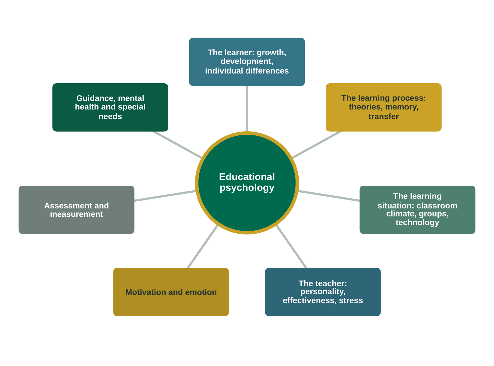
চিত্র ১. শিক্ষা মনোবিজ্ঞানের পরিধি
শিক্ষার্থী: শারীরিক, জ্ঞানীয়, সামাজিক ও আবেগীয় বিকাশ; বংশগতি ও পরিবেশ; বুদ্ধি, প্রবণতা ও ব্যক্তিত্বে ব্যক্তিগত পার্থক্য।
শিখন প্রক্রিয়া: শিখন তত্ত্ব, স্মৃতি ও বিস্মৃতি, শিখন সঞ্চালন (transfer of learning), সমস্যা সমাধান।
শিখন পরিস্থিতি: শ্রেণিকক্ষের পরিবেশ, দলগত গতিশীলতা, শিক্ষণ প্রযুক্তি।
শিক্ষক: কার্যকর শিক্ষাদানের বৈশিষ্ট্য, শিক্ষকের প্রত্যাশা (পিগম্যালিয়ন প্রভাব; Rosenthal & Jacobson, 1968), শিক্ষকের মানসিক চাপ ও সুস্থতা।
প্রেষণা, আবেগ ও সুস্থতা।
পরিমাপ ও মূল্যায়ন: অর্জন, বুদ্ধি ও ব্যক্তিত্বের অভীক্ষা।
নির্দেশনা ও পরামর্শদান, মানসিক স্বাস্থ্য এবং একীভূত শিক্ষা।
১.৩ শিক্ষা মনোবিজ্ঞানের পদ্ধতি
| পদ্ধতি | বিবরণ | শক্তিশালী দিক | সীমাবদ্ধতা |
|---|---|---|---|
| অন্তর্দর্শন (Introspection) | নিজের মানসিক প্রক্রিয়া নিজে পর্যবেক্ষণ করা (Wundt, Titchener) | অভিজ্ঞতায় সরাসরি প্রবেশ | আত্মনিষ্ঠ; ছোট শিশুদের ক্ষেত্রে সম্ভব নয় |
| পর্যবেক্ষণ (প্রাকৃতিক, অংশগ্রহণমূলক, কাঠামোবদ্ধ) | বাস্তব পরিবেশে আচরণের নিয়মতান্ত্রিক রেকর্ড রাখা | স্বাভাবিক, বাস্তব পরিবেশের সঙ্গে সামঞ্জস্যপূর্ণ | পর্যবেক্ষকের পক্ষপাত; সময়সাপেক্ষ; কার্যকারণ সম্পর্ক দেখাতে পারে না |
| পরীক্ষণ পদ্ধতি (Experimental method) | অন্যান্য চলক নিয়ন্ত্রণ করে একটি স্বাধীন চলক পরিবর্তন করা এবং নির্ভরশীল চলকের ওপর তার প্রভাব পরিমাপ করা | কার্যকারণ সম্পর্ক প্রতিষ্ঠা করে | কৃত্রিম পরিবেশ; নৈতিক সীমাবদ্ধতা |
| কেস স্টাডি (ক্লিনিক্যাল) | বহু উৎস ব্যবহার করে একজন ব্যক্তি বা একটি দলের গভীর অধ্যয়ন | সমৃদ্ধ খুঁটিনাটি তথ্য; বিশেষ চাহিদাসম্পন্ন শিক্ষার্থীদের ক্ষেত্রে উপযোগী | সাধারণীকরণ করা যায় না |
| জরিপ / প্রশ্নমালা | বড় নমুনা থেকে উত্তরদাতাদের নিজের দেওয়া তথ্য সংগ্রহ | দক্ষ; ব্যাপক পরিসর | উত্তরদানে পক্ষপাত; অগভীর |
| সহসম্বন্ধ পদ্ধতি (Correlational method) | দুটি চলকের মধ্যে সম্পর্ক পরিমাপ | সম্পর্ক দেখায় এবং পূর্বাভাস দিতে সাহায্য করে | সহসম্বন্ধ মানেই কার্যকারণ নয় |
| বিকাশমূলক পদ্ধতি: অনুদৈর্ঘ্য (longitudinal) ও প্রস্থচ্ছেদ (cross-sectional) | একই দলকে দীর্ঘ সময় ধরে অনুসরণ করা, অথবা একই সময়ে বিভিন্ন বয়সের দলের তুলনা করা | বিকাশজনিত পরিবর্তন দেখায় | অনুদৈর্ঘ্য গবেষণা ব্যয়বহুল এবং সময়ের সঙ্গে অংশগ্রহণকারী ঝরে পড়ে; প্রস্থচ্ছেদ গবেষণায় সমবয়সী দলের (cohort) প্রভাব থাকে |
| কার্যোপযোগী গবেষণা | পরিকল্পনা–কাজ–পর্যবেক্ষণ–প্রতিফলন চক্রে শিক্ষকেরা নিজেদের অনুশীলন নিজেরাই অধ্যয়ন করেন | সরাসরি অনুশীলনের উন্নতি ঘটায় | সাধারণীকরণের সুযোগ সীমিত |
পদ্ধতি বিষয়ক পরীক্ষার উত্তরের শেষে নৈতিকতা নিয়ে একটি বাক্য লিখুন: অবহিত সম্মতি, ক্ষতি থেকে সুরক্ষা, গোপনীয়তা এবং অপ্রাপ্তবয়স্কদের ক্ষেত্রে বিশেষ সতর্কতা।
ইউনিট ২: আচরণ ও শিখনের জৈবিক ভিত্তি
অধ্যায়ের সারসংক্ষেপ
এই অধ্যায়ে যা আছে: মানব স্নায়ুতন্ত্র; শিখনের স্নায়বিক ভিত্তি; গ্রন্থিতন্ত্র (অন্তঃক্ষরা তন্ত্র)।
শিক্ষাক্রমে যা বলা হয়েছেইউনিট ২: আচরণ ও শিখনের জৈবিক ভিত্তি · ৫ কন্টাক্ট আওয়ার
এই ইউনিট শেষে শিক্ষার্থীরা যা পারবে
- শিখন ও আচরণকে স্নায়ুতন্ত্রের সঙ্গে সম্পর্কিত করতে
- মানব বিকাশ ও শিখনের ওপর গ্রন্থিতন্ত্রের প্রভাব বিশ্লেষণ করতে
- মানব স্নায়ুতন্ত্র
- আচরণ ও শিখনের স্নায়বিক ভিত্তি
- গ্রন্থিতন্ত্র
- মানব বিকাশ ও শিখনের ওপর গ্রন্থিতন্ত্রের প্রভাব
২.১ মানব স্নায়ুতন্ত্র
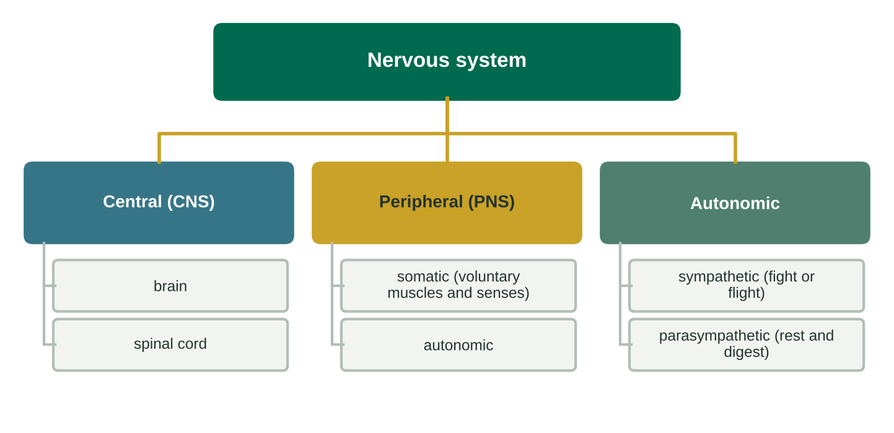
চিত্র ২. মানব স্নায়ুতন্ত্রের সংগঠন
নিউরন (Neuron): স্নায়ুতন্ত্রের মৌলিক একক; এর রয়েছে ডেনড্রাইট (dendrite, সংকেত গ্রহণ করে), কোষদেহ, অ্যাক্সন (axon, সংকেত প্রেরণ করে; প্রায়ই মায়েলিন আবরণ বা myelin sheath দ্বারা আবৃত) এবং অ্যাক্সন প্রান্ত। নিউরনগুলো সিন্যাপস (synapse) জুড়ে নিউরোট্রান্সমিটারের (neurotransmitter) মাধ্যমে পরস্পরের সঙ্গে যোগাযোগ করে; যেমন: ডোপামিন (পুরস্কার ও প্রেষণা), সেরোটোনিন (মেজাজ), অ্যাসিটাইলকোলিন (মনোযোগ ও স্মৃতি) এবং GABA (অবদমন)।
শিখনের সঙ্গে সম্পর্কিত মস্তিষ্কের অঞ্চলসমূহ:
গুরুমস্তিষ্কের বহিঃস্তর (Cerebral cortex), যার চারটি খণ্ড (lobe) রয়েছে: সম্মুখ খণ্ড (frontal; পরিকল্পনা, যুক্তি, নির্বাহী কার্যাবলি ও কার্যকরী স্মৃতি; এর প্রিফ্রন্টাল কর্টেক্স বিশের কোঠার মাঝামাঝি পর্যন্ত পরিপক্ব হতে থাকে), পার্শ্বীয় খণ্ড (parietal; সংবেদনের সমন্বয়, স্থানিক ও সংখ্যাগত প্রক্রিয়াকরণ), শঙ্খ খণ্ড (temporal; শ্রবণ, ভার্নিকের অঞ্চলে (Wernicke's area) ভাষা অনুধাবন, স্মৃতি) এবং পশ্চাৎ খণ্ড (occipital; দর্শন)।
লিম্বিক তন্ত্র (Limbic system): হিপোক্যাম্পাস (hippocampus) নতুন স্মৃতিকে সুসংহত করে; অ্যামিগডালা (amygdala) আবেগ, বিশেষত ভয়, প্রক্রিয়াকরণ করে।
লঘুমস্তিষ্ক (Cerebellum): সমন্বয়, পেশিজ শিখন (motor learning) এবং কিছু জ্ঞানীয় কাজ।
মস্তিষ্ককাণ্ড (Brainstem): জীবনধারণের মৌলিক কাজ ও উদ্দীপ্ত অবস্থা (জালিকাময় সক্রিয়কারী তন্ত্র বা reticular activating system)।
২.২ শিখনের স্নায়বিক ভিত্তি
স্নায়ু-নমনীয়তা (Neuroplasticity): অভিজ্ঞতার প্রতিক্রিয়ায় মস্তিষ্ক তার গঠন ও কার্যাবলি পরিবর্তন করে। "যে নিউরনগুলো একসঙ্গে সক্রিয় হয়, সেগুলো একসঙ্গে সংযুক্ত হয়" (Hebb, 1949)। শিখন সিন্যাপটিক সংযোগকে শক্তিশালী করে (দীর্ঘমেয়াদি পোটেনশিয়েশন বা long-term potentiation)।
সিন্যাপস গঠন ও ছাঁটাই (Synaptogenesis and pruning): শৈশবের শুরুতে সিন্যাপসের দ্রুত বৃদ্ধি ঘটে, তারপর অব্যবহৃত সংযোগগুলো ছাঁটাই হয় ("ব্যবহার করুন, নইলে হারাবেন"); এ কারণে শৈশবের প্রাথমিক উদ্দীপনা গুরুত্বপূর্ণ।
মায়েলিনায়ন (Myelination): প্রাপ্তবয়স্কতার প্রথম দিক পর্যন্ত চলতে থাকে এবং স্নায়বিক সংকেত পরিবহণের গতি বাড়ায়; মনোযোগ ও নির্বাহী নিয়ন্ত্রণের ক্ষেত্রে বিকাশজনিত সীমাবদ্ধতা ব্যাখ্যায় এটি সহায়ক।
সংবেদনশীল পর্যায় (Sensitive periods): এমন সময়পর্ব যখন নির্দিষ্ট কিছু শিখন, যেমন ভাষার ধ্বনিতত্ত্ব, সবচেয়ে সহজে ঘটে; তবে জীবনভর শিখন সম্ভব থাকে।
ঘুম, ব্যায়াম, পুষ্টি ও মানসিক চাপ সবই স্মৃতির সুসংহতকরণ ও মনোযোগকে প্রভাবিত করে। দীর্ঘস্থায়ী মানসিক চাপ (কর্টিসল) হিপোক্যাম্পাস ও কার্যকরী স্মৃতির ক্ষতি করে।
স্নায়ু-ভ্রান্ত ধারণা (neuromyths) সম্পর্কে সতর্ক থাকুন: "আমরা মস্তিষ্কের মাত্র ১০% ব্যবহার করি", "বাম-মস্তিষ্কী ও ডান-মস্তিষ্কী শিক্ষার্থী" এবং "শিখনশৈলীর (VAK) সঙ্গে মিলিয়ে পড়ালে শিখন উন্নত হয়"—এসব ধারণা প্রমাণ দ্বারা সমর্থিত নয় (Howard-Jones, 2014; Pashler et al., 2008)। পরীক্ষায় বা ভাইভায় এ বিষয়টি উল্লেখ করলে আপনার সমালোচনামূলক সচেতনতা প্রকাশ পায়।
২.৩ গ্রন্থিতন্ত্র (অন্তঃক্ষরা তন্ত্র)
| গ্রন্থি | হরমোন | বিকাশ ও শিখনের ওপর প্রভাব |
|---|---|---|
| পিটুইটারি ("প্রধান গ্রন্থি") | বৃদ্ধি হরমোন; অন্যান্য গ্রন্থিকে নিয়ন্ত্রণ করে | শারীরিক বৃদ্ধি; ভারসাম্যহীনতার ফলে অতিকায়ত্ব বা বামনত্ব |
| থাইরয়েড | থাইরক্সিন | বিপাক ও শক্তি; ঘাটতি (হাইপোথাইরয়েডিজম) অবসাদ সৃষ্টি করে এবং শৈশবে বুদ্ধিবৃত্তিক প্রতিবন্ধিতা ঘটায় (ক্রেটিনিজম, যা আয়োডিনের ঘাটতির সঙ্গে সম্পর্কিত); আধিক্য অস্থিরতা ও উদ্বেগ সৃষ্টি করে |
| প্যারাথাইরয়েড | প্যারাথরমোন | ক্যালসিয়ামের ভারসাম্য; স্নায়ু ও পেশির কার্যকারিতা |
| অ্যাড্রিনাল | অ্যাড্রিনালিন, কর্টিসল | মানসিক চাপের প্রতিক্রিয়া; উচ্চ ও দীর্ঘস্থায়ী কর্টিসল স্মৃতি ও মনোযোগের ক্ষতি করে |
| অগ্ন্যাশয় | ইনসুলিন | রক্তে শর্করা; রক্তে শর্করা কমে গেলে মনোযোগ হ্রাস পায় (বিদ্যালয়ে খাবারের গুরুত্ব) |
| জননগ্রন্থি (ডিম্বাশয়, শুক্রাশয়) | ইস্ট্রোজেন, প্রোজেস্টেরন, টেস্টোস্টেরন | বয়ঃসন্ধি, গৌণ যৌন বৈশিষ্ট্য, কৈশোরে মেজাজ ও আত্মপরিচয়ের পরিবর্তন |
| পিনিয়াল | মেলাটোনিন | ঘুম–জাগরণ চক্র; কিশোর-কিশোরীদের বিলম্বিত ঘুমের পর্যায় সকালের সতর্কতাকে প্রভাবিত করে |
বাংলাদেশে সর্বজনীন লবণ আয়োডিনযুক্তকরণ (১৯৮৯ সাল থেকে) এমন একটি জনস্বাস্থ্য উদ্যোগের উদাহরণ যার সরাসরি শিক্ষাগত সুফল রয়েছে, কারণ আয়োডিনের ঘাটতি জ্ঞানীয় বিকাশ ব্যাহত হওয়ার একটি প্রধান প্রতিরোধযোগ্য কারণ।
ইউনিট ৩: শিখন তত্ত্ব ও এর প্রয়োগ
অধ্যায়ের সারসংক্ষেপ
পরিপক্বতা হলো সময়ের সঙ্গে জিনগতভাবে নির্ধারিত পরিবর্তনের উন্মোচন, যেমন হাঁটা বা বয়ঃসন্ধি, যা নির্দিষ্ট অভিজ্ঞতার ওপর নির্ভর করে না। শিখন অভিজ্ঞতার ওপর নির্ভর করে।
এই অধ্যায়ে যা আছে: শিখনের ধারণা; পরিপক্বতা বনাম শিখন; আচরণবাদী দৃষ্টিভঙ্গি; জ্ঞানবাদী দৃষ্টিভঙ্গি; গঠনবাদ; সংযোগবাদ।
মূল পরিভাষা:
- শিখন: অনুশীলন বা অভিজ্ঞতার ফলে আচরণে, অথবা আচরণের সামর্থ্যে, অপেক্ষাকৃত স্থায়ী পরিবর্তন (Schunk, 2020 অবলম্বনে)।
শিক্ষাক্রমে যা বলা হয়েছেইউনিট ৩: শিখন তত্ত্ব ও এর প্রয়োগ · ১০ কন্টাক্ট আওয়ার
এই ইউনিট শেষে শিক্ষার্থীরা যা পারবে
- শিখনের ধারণা ব্যাখ্যা করতে
- শিখনের বিভিন্ন তাত্ত্বিক দৃষ্টিভঙ্গির মধ্যে তুলনা করতে
- শিক্ষাগত পরিবেশে শিখনের বিভিন্ন তাত্ত্বিক দৃষ্টিভঙ্গি প্রয়োগ করতে
- শিখনের ধারণা: পরিপক্বতা বনাম শিখন
- শিখনের আচরণবাদী দৃষ্টিভঙ্গি ও এর শিক্ষাগত প্রয়োগ: সাপেক্ষ অনুবর্তন, করণ অনুবর্তন, সংযোজনবাদ এবং অন্তর্দৃষ্টিমূলক শিখন তত্ত্ব
- শিখনের জ্ঞানবাদী দৃষ্টিভঙ্গি ও এর শিক্ষাগত প্রয়োগ: পিয়াজের জ্ঞানীয়
- গঠনবাদ ও এর শিক্ষাগত প্রয়োগ: চরম ও সামাজিক গঠনবাদ, নির্মাণবাদ (Constructionism) ও এর
- সংযোগবাদ: সংযুক্ততা, প্রযুক্তিনির্ভর শিখন, কৃত্রিম বুদ্ধিমত্তা, এডটেক (EdTech)
৩.১ শিখনের ধারণা; পরিপক্বতা বনাম শিখন
শিখন (Learning): অনুশীলন বা অভিজ্ঞতার ফলে আচরণে, অথবা আচরণের সামর্থ্যে, অপেক্ষাকৃত স্থায়ী পরিবর্তন (Schunk, 2020 অবলম্বনে)।
পরিপক্বতা (Maturation) হলো সময়ের সঙ্গে জিনগতভাবে নির্ধারিত পরিবর্তনের উন্মোচন, যেমন হাঁটা বা বয়ঃসন্ধি, যা নির্দিষ্ট অভিজ্ঞতার ওপর নির্ভর করে না। শিখন অভিজ্ঞতার ওপর নির্ভর করে। এ দুটি পরস্পরের সঙ্গে ক্রিয়া করে: প্রস্তুতি (পরিপক্বতা) কী শেখা যাবে তার সীমা নির্ধারণ করে, আর অভিজ্ঞতা নির্ধারণ করে পরিপক্বতা কীভাবে প্রকাশ পাবে। সিঁড়ি বেয়ে ওঠা নিয়ে আর্নল্ড গেসেলের (Arnold Gesell) যমজ-গবেষণায় দেখা গেছে, আগেভাগে প্রশিক্ষণ দেওয়া পরবর্তী পরিপক্বতার তুলনায় সামান্যই সুবিধা দেয়।
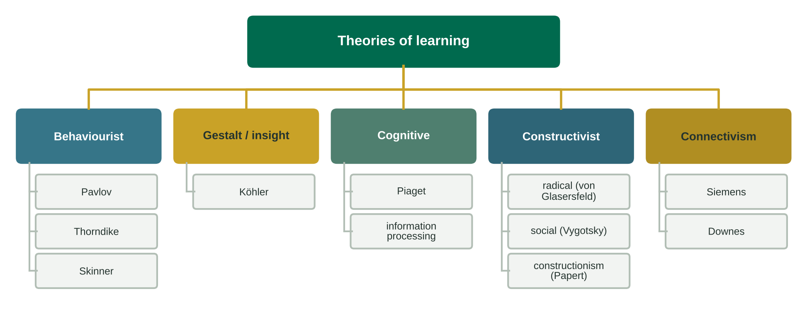
চিত্র ৩. এই ইউনিটে আলোচিত শিখন তত্ত্বের প্রধান ধারাসমূহ
৩.২ আচরণবাদী দৃষ্টিভঙ্গি
সাপেক্ষ অনুবর্তন (ইভান পাভলভ)
একটি নিরপেক্ষ উদ্দীপক (ঘণ্টা) যখন বারবার একটি অনপেক্ষ উদ্দীপকের (খাবার) সঙ্গে যুক্ত করা হয়, যা অনপেক্ষ প্রতিক্রিয়া (লালা নিঃসরণ) সৃষ্টি করে, তখন নিরপেক্ষ উদ্দীপকটি এককভাবেই একটি সাপেক্ষ প্রতিক্রিয়া জাগাতে শুরু করে।

চিত্র ৪. সাপেক্ষ অনুবর্তনের ধারাক্রম
মূল নীতিসমূহ: অর্জন (acquisition), বিলোপ (extinction), স্বতঃস্ফূর্ত পুনরুদ্ধার (spontaneous recovery), উদ্দীপক সাধারণীকরণ (stimulus generalisation) ও উদ্দীপক পার্থক্যকরণ (discrimination)। জে. বি. ওয়াটসনের (J. B. Watson) "লিটল অ্যালবার্ট" গবেষণা (১৯২০) দেখিয়েছে যে ভয়ের মতো আবেগীয় প্রতিক্রিয়াও অনুবর্তিত হতে পারে।
শ্রেণিকক্ষে তাৎপর্য: শিখনকে ইতিবাচক অভিজ্ঞতার সঙ্গে যুক্ত করুন, যাতে বিদ্যালয় ও বিষয়গুলো উদ্বেগের বদলে আনন্দের সঙ্গে সম্পর্কিত হয়; অনুবর্তিত পরীক্ষা-উদ্বেগ ও বিদ্যালয়-ভীতি শনাক্ত করে তা হ্রাস করুন (ক্রমিক সংবেদন-হ্রাসকরণ বা systematic desensitisation)।
সংযোজনবাদ (ই. এল. থর্নডাইক)
বিড়াল নিয়ে ধাঁধা-বাক্স (puzzle-box) পরীক্ষা থেকে থর্নডাইক (Thorndike, 1913) সিদ্ধান্তে পৌঁছান যে শিখন হলো প্রচেষ্টা ও ভুলের (trial and error) মাধ্যমে উদ্দীপক–প্রতিক্রিয়া বন্ধনের শক্তিশালী হওয়া। তাঁর সূত্রগুলো হলো:
ফলাফলের সূত্র (Law of effect): যে প্রতিক্রিয়ার পরে সন্তুষ্টি আসে তা শক্তিশালী হয়; যে প্রতিক্রিয়ার পরে অস্বস্তি আসে তা দুর্বল হয়।
অনুশীলনের সূত্র (Law of exercise): ব্যবহারের মাধ্যমে সংযোগ শক্তিশালী হয় এবং অব্যবহারে দুর্বল হয়।
প্রস্তুতির সূত্র (Law of readiness): যখন কোনো পরিবহণ একক (conduction unit) কাজ করতে প্রস্তুত থাকে, তখন কাজ করা সন্তোষজনক; কাজ করতে বাধা পেলে তা বিরক্তিকর।
তাৎপর্য: শিক্ষাদানের আগে প্রেষণা ও প্রস্তুতি, অনুশীলন ও পুনরাবৃত্তিমূলক চর্চা (drill), এবং তাৎক্ষণিক ফলাবর্তন।
করণ অনুবর্তন (বি. এফ. স্কিনার)
আচরণ তার পরিণতির দ্বারা গঠিত হয়।
| একটি উদ্দীপক যোগ করা | একটি উদ্দীপক অপসারণ করা | |
|---|---|---|
| আচরণ বৃদ্ধি পায় | ইতিবাচক পুনর্বলন (প্রশংসা, একটি স্টিকার) | নেতিবাচক পুনর্বলন (আগেভাগে কাজ শেষ করলে বাড়ির কাজ মওকুফ) |
| আচরণ হ্রাস পায় | ইতিবাচক শাস্তি (অতিরিক্ত কাজ, তিরস্কার) | নেতিবাচক শাস্তি / প্রতিক্রিয়া-মূল্য (response cost) (বিরতির সময় হারানো) |
পুনর্বলনের সূচি (schedules of reinforcement) (নিরবচ্ছিন্ন; স্থির ও পরিবর্তনশীল অনুপাত; স্থির ও পরিবর্তনশীল ব্যবধান) শিখনের গতি এবং বিলোপের বিরুদ্ধে প্রতিরোধক্ষমতাকে প্রভাবিত করে। পরিবর্তনশীল সূচি সবচেয়ে স্থায়ী আচরণ সৃষ্টি করে। আকারদান (shaping) ক্রমিক নিকটবর্তী আচরণকে পুনর্বলিত করে। অনুক্রমিত শিক্ষণ (programmed instruction) ও শিক্ষণ-যন্ত্র, যা অভিযোজনমূলক ই-লার্নিংয়ের পূর্বসূরি, স্কিনারের কাছ থেকেই এসেছে।
শ্রেণিকক্ষে তাৎপর্য: সুস্পষ্ট উদ্দেশ্য, ছোট ছোট ধাপ, সক্রিয় সাড়াদান, তাৎক্ষণিক ফলাবর্তন, কাঙ্ক্ষিত আচরণের পুনর্বলন, টোকেন ব্যবস্থা (token economy) ও আচরণ-চুক্তি। সমালোচকদের মতে আচরণবাদ অনুধাবন, অন্তর্নিহিত প্রেষণা ও উচ্চতর স্তরের চিন্তনকে উপেক্ষা করে।
অন্তর্দৃষ্টিমূলক শিখন (ভলফগাং কোহলার, গেস্টাল্ট)
কোহলারের (Wolfgang Köhler) শিম্পাঞ্জি সুলতান কিছুক্ষণ আপাত-চিন্তার পর দুটি লাঠি জোড়া দিয়ে একটি কলা নাগালে আনে; এটি প্রত্যক্ষণ ক্ষেত্রের আকস্মিক পুনর্বিন্যাস ("আহা!" অভিজ্ঞতা)। অন্তর্দৃষ্টিমূলক শিখন (insight learning) আকস্মিক, সঞ্চালনযোগ্য এবং দীর্ঘদিন মনে থাকে। তাৎপর্য: সমস্যাকে সামগ্রিকভাবে উপস্থাপন করুন, অনুসন্ধান ও প্রতিফলনের জন্য সময় দিন, এবং আবিষ্কার ও সমস্যা সমাধান পদ্ধতি ব্যবহার করুন।
৩.৩ জ্ঞানবাদী দৃষ্টিভঙ্গি
পিয়াজের জ্ঞানীয় বিকাশ তত্ত্ব
জঁ পিয়াজে (Jean Piaget) শিশুদের সক্রিয় "ক্ষুদে বিজ্ঞানী" হিসেবে দেখেছেন, যারা নিজেরাই বোধ গড়ে তোলে। মূল ধারণাসমূহ:
স্কিমা (Schema): চিন্তা বা কাজের একটি সংগঠিত কাঠামো।
আত্তীকরণ (Assimilation): নতুন অভিজ্ঞতাকে বিদ্যমান স্কিমার সঙ্গে খাপ খাওয়ানো।
উপযোজন (Accommodation): নতুন অভিজ্ঞতার সঙ্গে খাপ খাওয়াতে স্কিমার পরিবর্তন করা।
ভারসাম্যায়ন (Equilibration): আত্তীকরণ ও উপযোজনের মধ্যে ভারসাম্য অর্জনের তাড়না; ভারসাম্যহীনতা (জ্ঞানীয় দ্বন্দ্ব) বিকাশকে চালিত করে।
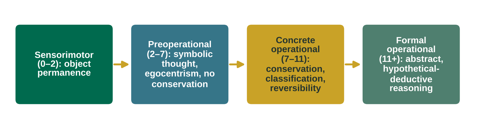
চিত্র ৫. পিয়াজের জ্ঞানীয় বিকাশের চারটি স্তর
তাৎপর্য: কাজকে বিকাশের স্তরের সঙ্গে সামঞ্জস্যপূর্ণ করুন; প্রাথমিক স্তরের শিশুদের সঙ্গে মূর্ত উপকরণ ব্যবহার করুন; জ্ঞানীয় দ্বন্দ্ব সৃষ্টি করুন; আবিষ্কার ও সহপাঠী-মিথস্ক্রিয়াকে উৎসাহিত করুন; কেবল সঠিক উত্তর নয়, চিন্তার প্রক্রিয়ার ওপর গুরুত্ব দিন। সমালোচনা: পিয়াজে ছোট শিশুদের সামর্থ্যকে অবমূল্যায়ন করেছেন, স্তরগুলো তাঁর ধারণার মতো এতটা অভিন্ন নয়, এবং সংস্কৃতি ও সামাজিক মিথস্ক্রিয়া তিনি যতটা স্বীকার করেছেন তার চেয়ে বেশি গুরুত্বপূর্ণ (Donaldson, 1978)।
তথ্য প্রক্রিয়াকরণ উপাগম
মনকে একটি কম্পিউটারের সঙ্গে তুলনা করা হয়, যা তথ্য গ্রহণ, সংকেতায়ন (encode), সংরক্ষণ ও পুনরুদ্ধার করে (Atkinson & Shiffrin, 1968)।
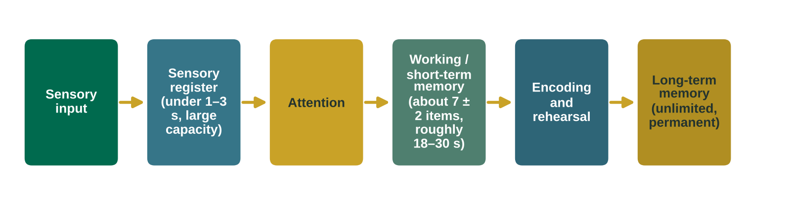
চিত্র ৬. স্মৃতির বহু-ভান্ডার মডেল (Atkinson & Shiffrin, 1968)
কার্যকরী স্মৃতি (Working memory) (Baddeley & Hitch, 1974): একটি কেন্দ্রীয় নির্বাহী, একটি ধ্বনিতাত্ত্বিক লুপ, একটি দৃষ্টি-স্থানিক স্কেচপ্যাড এবং একটি ঘটনাভিত্তিক বাফার।
জ্ঞানীয় চাপ তত্ত্ব (Cognitive load theory) (Sweller, 1988): কার্যকরী স্মৃতি সীমিত, তাই শিক্ষণের উচিত বহিরাগত চাপ (extraneous load; বিভ্রান্তিকর উপস্থাপন) কমানো এবং অন্তর্নিহিত চাপ (intrinsic load; জটিলতা) নিয়ন্ত্রণ করা, যাতে প্রাসঙ্গিক চাপের (germane load; স্কিমা গঠন) জন্য সক্ষমতা মুক্ত থাকে।
দীর্ঘমেয়াদি স্মৃতি (Long-term memory): ঘোষণামূলক (ঘটনাভিত্তিক ও অর্থভিত্তিক) এবং পদ্ধতিগত।
বিস্মৃতি (Forgetting): ক্ষয়, ব্যতিচার (পূর্বগামী ও পশ্চাদগামী) এবং পুনরুদ্ধারে ব্যর্থতা। এবিংহাউসের (Hermann Ebbinghaus) বিস্মৃতি-রেখা শুরুর দিকে দ্রুত বিস্মরণ দেখায়।
তাৎপর্য: মনোযোগ আকর্ষণ করুন; পূর্বজ্ঞান সক্রিয় করুন; তথ্যকে খণ্ডে ভাগ করুন (chunking); দ্বৈত সংকেতায়ন (dual coding; শব্দ ও দৃশ্য) ব্যবহার করুন; সমাধানকৃত উদাহরণ দিন; পুনরুদ্ধার-অনুশীলন ও বিরতিসহ অনুশীলন ব্যবহার করুন (Dunlosky et al., 2013); স্মৃতিসহায়ক কৌশল (mnemonics) ও অধিজ্ঞানীয় (metacognitive) কৌশল শেখান।
৩.৪ গঠনবাদ
গঠনবাদ (Constructivism) মনে করে শিক্ষার্থীরা নিষ্ক্রিয়ভাবে জ্ঞান গ্রহণ না করে সক্রিয়ভাবে জ্ঞান গঠন করে।
চরম গঠনবাদ (Radical constructivism) (আর্নস্ট ফন গ্লাসারসফেল্ড, Ernst von Glasersfeld): জ্ঞান ব্যক্তিগতভাবে গঠিত হয় এবং এর বিচার হয় কার্যোপযোগিতা দিয়ে (জ্ঞাতার জন্য তা কাজ করে কি না), কোনো বস্তুনিষ্ঠ বাস্তবতার সঙ্গে সাদৃশ্য দিয়ে নয়।
সামাজিক গঠনবাদ (Social constructivism) (লেভ ভিগটস্কি, Lev Vygotsky): শিখন প্রথমে সামাজিক, পরে ব্যক্তিগত। মূল ধারণাসমূহ:
নিকটবর্তী বিকাশের অঞ্চল (Zone of Proximal Development, ZPD): "স্বাধীনভাবে সমস্যা সমাধানের মাধ্যমে নির্ধারিত প্রকৃত বিকাশের স্তর এবং প্রাপ্তবয়স্কের নির্দেশনায় বা অধিকতর দক্ষ সহপাঠীদের সহযোগিতায় সমস্যা সমাধানের মাধ্যমে নির্ধারিত সম্ভাব্য বিকাশের স্তরের মধ্যকার দূরত্ব" (Vygotsky, 1978, p. 86)।
ভারা প্রদান (Scaffolding) (Wood, Bruner & Ross, 1976): অস্থায়ী সহায়তা, যা দক্ষতা বাড়ার সঙ্গে সঙ্গে ধীরে ধীরে প্রত্যাহার করা হয়।
অধিকতর জ্ঞানী অপর (More Knowledgeable Other, MKO) এবং চিন্তার হাতিয়ার হিসেবে ভাষার ভূমিকা; আত্মকথন (private speech)।
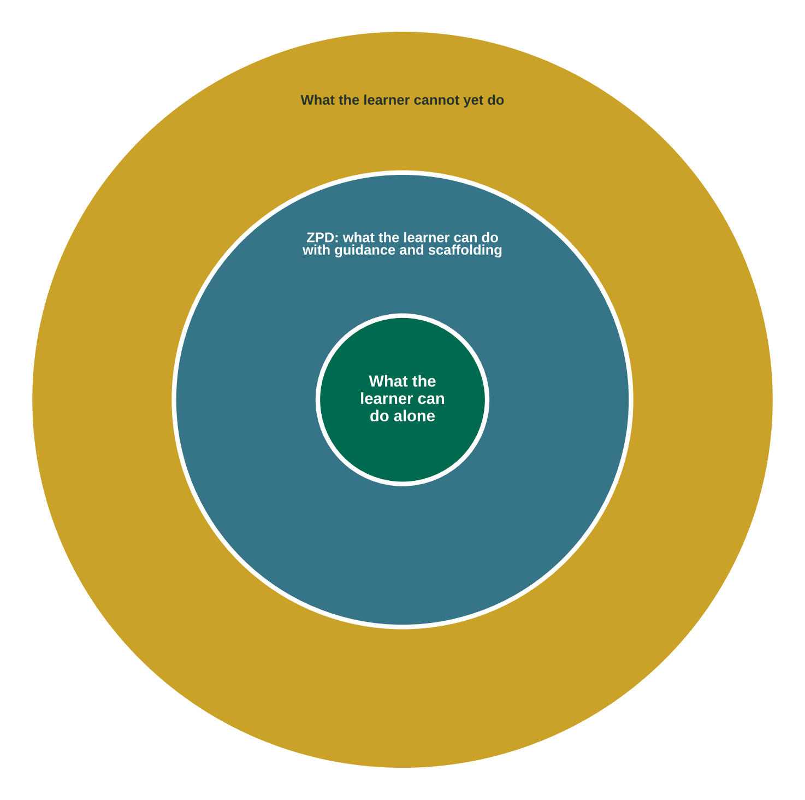
চিত্র ৭. ভিগটস্কির নিকটবর্তী বিকাশের অঞ্চল
নির্মাণবাদ (Constructionism) (সিমুর প্যাপার্ট, Seymour Papert): মানুষ সবচেয়ে ভালো শেখে কিছু তৈরি করার মাধ্যমে, অর্থাৎ প্রোগ্রাম, মডেল ও রোবটের মতো বাস্তব ও ভাগ করে নেওয়া যায় এমন সৃষ্টিকর্ম নির্মাণের মাধ্যমে (প্যাপার্টের LOGO)। বিদ্যালয়ে মেকার শিক্ষা ও কোডিংয়ের ভিত্তি এটিই।
গঠনবাদের শ্রেণিকক্ষ-তাৎপর্য: সমস্যাভিত্তিক ও অনুসন্ধানভিত্তিক শিখন, সহযোগিতামূলক শিখন, পারস্পরিক শিক্ষণ (reciprocal teaching), প্রামাণিক কাজ (authentic tasks), ভারা প্রদান, এবং স্মরণের বদলে অনুধাবনের মূল্যায়ন।
৩.৫ সংযোগবাদ
জর্জ সিমেন্স (George Siemens, 2005) ও স্টিফেন ডাউনস (Stephen Downes) ডিজিটাল যুগের শিখন তত্ত্ব হিসেবে সংযোগবাদ (connectivism) প্রস্তাব করেন: শিখন হলো নেটওয়ার্কের বিভিন্ন নোডের (মানুষ, তথ্যের উৎস, যন্ত্র) মধ্যে সংযোগ গড়ে তোলার প্রক্রিয়া; "বর্তমানে যা জানা আছে তার চেয়ে আরও বেশি জানার সামর্থ্য অধিক গুরুত্বপূর্ণ"; জ্ঞান কোথায় পাওয়া যাবে তা জানা, কী ও কীভাবে জানার মতোই গুরুত্বপূর্ণ; হালনাগাদ জ্ঞান (currency) ও সিদ্ধান্ত গ্রহণ এখানে কেন্দ্রীয় বিষয়।
সংযুক্ততা (Connectedness): ব্যক্তিগত শিখন নেটওয়ার্ক, অনলাইন কমিউনিটি এবং MOOC (প্রথম cMOOC পরিচালনা করেন সিমেন্স ও ডাউনস, ২০০৮ সালে)।
প্রযুক্তিনির্ভর শিখন ও এডটেক (EdTech): শিখন ব্যবস্থাপনা পদ্ধতি (learning management system), অভিযোজনমূলক প্ল্যাটফর্ম, সিমুলেশন, মোবাইল শিখন।
কৃত্রিম বুদ্ধিমত্তা (Artificial intelligence): বুদ্ধিমান টিউটরিং ব্যবস্থা, জেনারেটিভ AI টিউটর ও অভিযোজনমূলক মূল্যায়ন। এগুলো একাডেমিক সততা, উপাত্তের গোপনীয়তা, পক্ষপাত এবং AI সাক্ষরতার প্রয়োজনীয়তার প্রশ্ন তোলে (UNESCO, 2023, Guidance for generative AI in education and research)।
সমালোচনা: কারও কারও মতে (Verhagen, 2006) সংযোগবাদ একটি পূর্ণাঙ্গ শিখন তত্ত্ব নয়, বরং একটি শিক্ষণবৈজ্ঞানিক দৃষ্টিভঙ্গি, কারণ এটি শিখনের জ্ঞানীয় প্রক্রিয়াটি নিজে ব্যাখ্যা করে না।
| তত্ত্ব | শিক্ষার্থী সম্পর্কে দৃষ্টিভঙ্গি | শিক্ষকের ভূমিকা | প্রচলিত পদ্ধতি |
|---|---|---|---|
| আচরণবাদ | নিষ্ক্রিয় সাড়াদাতা | পুনর্বলনের মাধ্যমে আচরণ গঠন করেন | পুনরাবৃত্তিমূলক চর্চা, অনুক্রমিত শিক্ষণ |
| জ্ঞানবাদ | তথ্য প্রক্রিয়াকারী | দক্ষ প্রক্রিয়াকরণের জন্য তথ্য সংগঠিত করেন | অগ্রিম সংগঠক (advance organiser), সমাধানকৃত উদাহরণ |
| গঠনবাদ | অর্থের সক্রিয় নির্মাতা | সহায়ক (facilitator), ভারা প্রদানকারী | অনুসন্ধান, প্রকল্প, সহযোগিতা |
| সংযোগবাদ | নেটওয়ার্কের একটি নোড | নেটওয়ার্ক নির্মাতা, বিষয়বস্তু বাছাইকারী (curator) | অনলাইন নেটওয়ার্ক, MOOC |
একটি অত্যন্ত প্রচলিত রচনামূলক প্রশ্ন হলো "আচরণবাদী, জ্ঞানবাদী ও গঠনবাদী তত্ত্বের তুলনা করুন এবং শ্রেণিকক্ষে এগুলোর তাৎপর্য আলোচনা করুন।" ওপরের সারণিটিকে উত্তরের কাঠামো হিসেবে ব্যবহার করুন এবং প্রতিটির জন্য বাংলাদেশের শ্রেণিকক্ষ থেকে একটি করে উদাহরণ যোগ করুন।
ইউনিট ৪: প্রেষণা ও শিখন
অধ্যায়ের সারসংক্ষেপ
উচ্চতর বিকাশমূলক চাহিদা আচরণকে প্রেষিত করার আগে নিম্নতর ঘাটতিজনিত চাহিদাগুলো মোটামুটি পূরণ হওয়া প্রয়োজন। মাসলো পরবর্তীতে জ্ঞানীয় ও নান্দনিক চাহিদা এবং আত্ম-অতিক্রমণ যুক্ত করেন।
এই অধ্যায়ে যা আছে: ধারণা ও প্রকারভেদ; প্রেষণার উপাদানসমূহ; প্রেষণার তত্ত্বসমূহ; শিখনে প্রেষণার প্রয়োগ।
মূল পরিভাষা:
- প্রেষণা: একটি অভ্যন্তরীণ অবস্থা যা লক্ষ্যাভিমুখী আচরণকে জাগ্রত করে, পরিচালিত করে এবং টিকিয়ে রাখে (Woolfolk, 2019)।
শিক্ষাক্রমে যা বলা হয়েছেইউনিট ৪: প্রেষণা ও শিখন · ৪ কন্টাক্ট আওয়ার
এই ইউনিট শেষে শিক্ষার্থীরা যা পারবে
- প্রেষণার ধারণা ব্যাখ্যা করতে
- মাসলোর চাহিদার সোপান অনুধাবন করতে
- আত্মনিয়ন্ত্রণ তত্ত্ব বিশ্লেষণ করতে
- শিখনে প্রেষণার তত্ত্বসমূহ প্রয়োগ করতে
- প্রেষণার ধারণা ও প্রকারভেদ
- প্রেষণার উপাদানসমূহ: শিক্ষার্থী, শিক্ষক, অভিভাবক, পরিবেশ
- প্রেষণার তত্ত্বসমূহ: মাসলোর চাহিদার সোপান, হার্জবার্গের দ্বি-উপাদান তত্ত্ব, আত্মনিয়ন্ত্রণ তত্ত্ব
- শিখনে প্রেষণার প্রয়োগ
৪.১ ধারণা ও প্রকারভেদ
প্রেষণা (Motivation): একটি অভ্যন্তরীণ অবস্থা যা লক্ষ্যাভিমুখী আচরণকে জাগ্রত করে, পরিচালিত করে এবং টিকিয়ে রাখে (Woolfolk, 2019)।
অন্তর্নিহিত প্রেষণা (Intrinsic motivation): কোনো কাজের নিজস্ব আকর্ষণ ও আনন্দের জন্য কাজটি করা।
বাহ্যিক প্রেষণা (Extrinsic motivation): কাজ থেকে পৃথক কোনো ফল (গ্রেড, প্রশংসা, পুরস্কার, শাস্তি এড়ানো) পাওয়ার জন্য কাজটি করা।
অন্যান্য শ্রেণিবিভাগ: অর্জন-প্রেষণা (achievement motivation; McClelland; Atkinson), দক্ষতা-লক্ষ্য ও সম্পাদন-লক্ষ্য (mastery and performance goals; Dweck; Ames), এবং প্রত্যাশা-মূল্য তত্ত্ব (expectancy-value; Eccles & Wigfield: প্রেষণা = সাফল্যের প্রত্যাশা × কাজের মূল্য)।
৪.২ প্রেষণার উপাদানসমূহ
| উৎস | উদাহরণসমূহ |
|---|---|
| শিক্ষার্থী | আগ্রহ, চাহিদা, আত্ম-কার্যকারিতা (self-efficacy; Bandura), কারণারোপ (attribution; Weiner), মানসিকতা (mindset; Dweck), লক্ষ্য, কৌতূহল |
| শিক্ষক | উদ্দীপনা, প্রত্যাশা, স্পষ্টতা, প্রাসঙ্গিকতা, ফলাবর্তন, স্বাধিকারে সহায়তা, সম্পর্ক |
| অভিভাবক | সম্পৃক্ততা, আকাঙ্ক্ষা, বাড়ির শিখন-পরিবেশ, সহায়ক বনাম চাপ প্রয়োগকারী ধরন |
| পরিবেশ | শ্রেণিকক্ষের আবহ, সহপাঠী-সংস্কৃতি, পুরস্কার ও পরীক্ষাব্যবস্থা, ভৌত পরিস্থিতি, শিক্ষার প্রতি সাংস্কৃতিক মূল্যায়ন |
৪.৩ প্রেষণার তত্ত্বসমূহ
মাসলোর চাহিদার সোপান (১৯৪৩, ১৯৫৪)

চিত্র ৮. মাসলোর চাহিদার সোপান
উচ্চতর বিকাশমূলক চাহিদা (growth needs) আচরণকে প্রেষিত করার আগে নিম্নতর ঘাটতিজনিত চাহিদাগুলো (deficiency needs) মোটামুটি পূরণ হওয়া প্রয়োজন। আব্রাহাম মাসলো (Abraham Maslow) পরবর্তীতে জ্ঞানীয় ও নান্দনিক চাহিদা এবং আত্ম-অতিক্রমণ (self-transcendence) যুক্ত করেন। তাৎপর্য: ক্ষুধার্ত, ভীত বা বঞ্চিত শিশু শিখনে মনোযোগ দিতে পারে না; এটিই বিদ্যালয়ে খাবার, নিরাপদ বিদ্যালয় ও উৎপীড়ন-বিরোধী নীতির পক্ষে যুক্তি, এবং এমন উষ্ণ শ্রেণিকক্ষের পক্ষে যুক্তি যেখানে প্রতিটি শিশু নিজেকে অন্তর্ভুক্ত মনে করে। সমালোচনা: সোপানটি কঠোরভাবে ক্রমানুসারী নয় এবং সংস্কৃতিভেদে ভিন্ন হয়।
হার্জবার্গের দ্বি-উপাদান তত্ত্ব (১৯৫৯)
কর্মক্ষেত্রের প্রেষণা ব্যাখ্যার জন্য ফ্রেডেরিক হার্জবার্গ (Frederick Herzberg) তত্ত্বটি প্রণয়ন করলেও এটি শিক্ষকের প্রেষণার ক্ষেত্রে অত্যন্ত প্রাসঙ্গিক।
স্বাস্থ্যবিধানমূলক উপাদান (Hygiene factors) (বেতন, কাজের পরিবেশ, নীতি, তত্ত্বাবধান, চাকরির নিরাপত্তা) অসন্তুষ্টি প্রতিরোধ করে, কিন্তু প্রেষণা সৃষ্টি করে না।
প্রেষণাদায়ক উপাদান (Motivators) (অর্জন, স্বীকৃতি, কাজটি নিজে, দায়িত্ব, পদোন্নতি, পেশাগত বিকাশ) সন্তুষ্টি ও প্রেষণা সৃষ্টি করে।
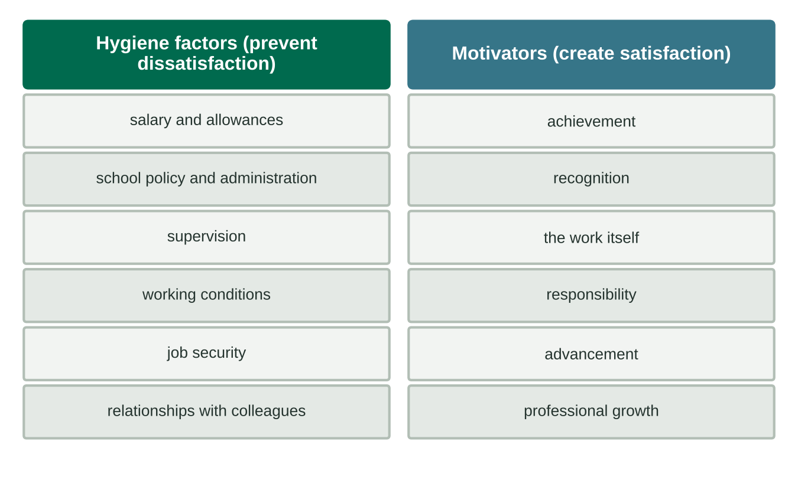
চিত্র ৯. শিক্ষকদের ক্ষেত্রে প্রয়োগকৃত হার্জবার্গের দ্বি-উপাদান তত্ত্ব
আত্মনিয়ন্ত্রণ তত্ত্ব (Self-Determination Theory) (Deci & Ryan, 1985; Ryan & Deci, 2000)
মানুষের তিনটি মৌলিক মনস্তাত্ত্বিক চাহিদা রয়েছে: স্বাধিকার (autonomy; পছন্দ ও স্বেচ্ছার বোধ), সক্ষমতা (competence; নিজেকে কার্যকর মনে করা) এবং সম্পর্কযুক্ততা (relatedness; সংযুক্ত বোধ করা)। এগুলো সমর্থিত হলে প্রেষণা একটি ধারাবাহিকতা বরাবর ক্রমশ অন্তর্নিহিত হয়ে ওঠে: প্রেষণাহীনতা থেকে বাহ্যিক, অন্তর্ভুক্ত (introjected), চিহ্নিত (identified) ও সমন্বিত (integrated) নিয়ন্ত্রণ পেরিয়ে অন্তর্নিহিত প্রেষণা পর্যন্ত। নিয়ন্ত্রণমূলক পুরস্কার অন্তর্নিহিত প্রেষণাকে দুর্বল করতে পারে (অতিযৌক্তিকতা প্রভাব বা overjustification effect)।
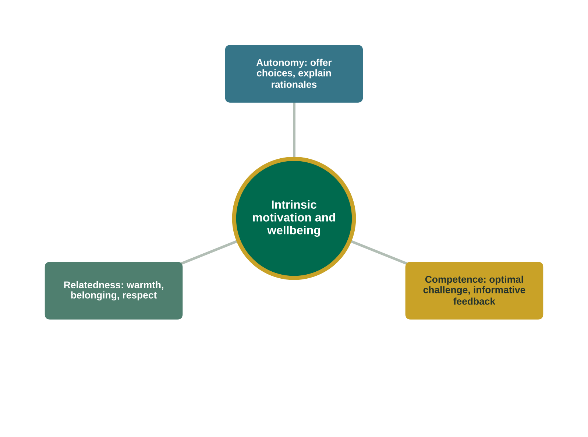
চিত্র ১০. আত্মনিয়ন্ত্রণ তত্ত্ব: তিনটি মৌলিক মনস্তাত্ত্বিক চাহিদা
৪.৪ শিখনে প্রেষণার প্রয়োগ
বিষয়বস্তুকে প্রাসঙ্গিক করুন এবং শিক্ষার্থীদের জীবনের সঙ্গে যুক্ত করুন।
সুস্পষ্ট, চ্যালেঞ্জপূর্ণ কিন্তু অর্জনযোগ্য লক্ষ্য নির্ধারণ করুন।
যেখানে সম্ভব পছন্দের সুযোগ ও স্বাধিকার দিন।
নির্দিষ্ট ও তথ্যসমৃদ্ধ ফলাবর্তন দিন, যা প্রচেষ্টা ও কৌশলের ওপর গুরুত্ব দেয় (বিকাশমুখী মানসিকতা বা growth mindset)।
আন্তরিকভাবে ও পরিমিতভাবে প্রশংসা করুন, এবং কেবল অংশগ্রহণের জন্য নয়, অগ্রগতির জন্য পুরস্কার দিন।
প্রতিযোগিতামূলক সম্পাদন-লক্ষ্যের চেয়ে দক্ষতা-লক্ষ্যকে উৎসাহিত করুন।
নিয়ন্ত্রণযোগ্য কারণের প্রতি কারণারোপ করতে শেখান ("তুমি সফল হয়েছ কারণ তুমি একটি ভালো কৌশল ব্যবহার করেছ")।
সম্পর্কযুক্ততার চাহিদা পূরণে সহযোগিতামূলক শিখন ব্যবহার করুন।
ARCS মডেল (Keller, 1987) ব্যবহার করুন: মনোযোগ (Attention), প্রাসঙ্গিকতা (Relevance), আত্মবিশ্বাস (Confidence), সন্তুষ্টি (Satisfaction)।
ইউনিট ৫: আবেগ ও শিখন
অধ্যায়ের সারসংক্ষেপ
শারীরবৃত্তীয় পরিবর্তনের মধ্যে রয়েছে হৃৎস্পন্দন, রক্তচাপ, শ্বাসপ্রশ্বাস, ঘাম, চোখের মণির প্রসারণ ও হরমোনজনিত পরিবর্তন, যা স্বয়ংক্রিয় স্নায়ুতন্ত্র এবং অ্যামিগডালা–হাইপোথ্যালামাস পথ দ্বারা নিয়ন্ত্রিত হয়।
এই অধ্যায়ে যা আছে: আবেগের প্রকৃতি ও প্রকারভেদ; আবেগ ও শারীরবৃত্তীয় পরিবর্তন; শিক্ষায় আবেগের কাজ; শিক্ষার্থীর আবেগ ব্যবস্থাপনায় শিক্ষকের ভূমিকা।
মূল পরিভাষা:
- আবেগ: একটি জটিল মনস্তাত্ত্বিক অবস্থা, যার মধ্যে রয়েছে একটি আত্মগত অভিজ্ঞতা, একটি শারীরবৃত্তীয় প্রতিক্রিয়া এবং একটি আচরণগত বা অভিব্যক্তিমূলক প্রতিক্রিয়া।
শিক্ষাক্রমে যা বলা হয়েছেইউনিট ৫: আবেগ ও শিখন · ৪ কন্টাক্ট আওয়ার
এই ইউনিট শেষে শিক্ষার্থীরা যা পারবে
- আবেগের প্রকৃতি ও প্রকারভেদ অনুধাবন করতে
- শারীরবৃত্তীয় পরিবর্তন ও আবেগের মধ্যে সম্পর্ক স্থাপন করতে
- শিক্ষার্থীর আবেগ ব্যবস্থাপনায় শিক্ষকের ভূমিকা ব্যাখ্যা করতে
- আবেগ: প্রকৃতি ও প্রকারভেদ
- আবেগ ও শারীরবৃত্তীয় পরিবর্তন
- শিক্ষায় আবেগের কাজ
- শিক্ষার্থীর আবেগ ব্যবস্থাপনায় শিক্ষকের ভূমিকা
৫.১ আবেগের প্রকৃতি ও প্রকারভেদ
আবেগ (Emotion): একটি জটিল মনস্তাত্ত্বিক অবস্থা, যার মধ্যে রয়েছে একটি আত্মগত অভিজ্ঞতা, একটি শারীরবৃত্তীয় প্রতিক্রিয়া এবং একটি আচরণগত বা অভিব্যক্তিমূলক প্রতিক্রিয়া।
মৌলিক আবেগ (Basic emotions) (পল একম্যান, Ekman): আনন্দ, দুঃখ, ভয়, রাগ, বিস্ময় ও ঘৃণা, যেগুলোর মুখভঙ্গি সর্বজনীন।
প্লুচিকের চক্র (Plutchik's wheel): পরস্পরবিরোধী জোড়ায় আটটি প্রাথমিক আবেগ (আনন্দ–দুঃখ, আস্থা–ঘৃণা, ভয়–রাগ, বিস্ময়–প্রত্যাশা), যেগুলো মিলে জটিল আবেগ তৈরি হয়।
শিক্ষাসংক্রান্ত আবেগ (Academic emotions) (Pekrun, 2006, নিয়ন্ত্রণ-মূল্য তত্ত্ব): উপভোগ, আশা ও গর্ব (ইতিবাচক সক্রিয়কারী); স্বস্তি (ইতিবাচক নিষ্ক্রিয়কারী); রাগ ও উদ্বেগ (নেতিবাচক সক্রিয়কারী); একঘেয়েমি ও হতাশা (নেতিবাচক নিষ্ক্রিয়কারী)।
৫.২ আবেগ ও শারীরবৃত্তীয় পরিবর্তন
| তত্ত্ব | ক্রম |
|---|---|
| জেমস–ল্যাঞ্জ (James–Lange) | উদ্দীপক → শারীরবৃত্তীয় উদ্দীপ্ততা → আবেগ ("আমরা কাঁপি বলেই ভয় পাই") |
| ক্যানন–বার্ড (Cannon–Bard) | উদ্দীপক → উদ্দীপ্ততা ও আবেগ একই সঙ্গে ঘটে (থ্যালামাস) |
| শ্যাক্টার–সিঙ্গার (Schachter–Singer) (দ্বি-উপাদান) | উদ্দীপক → উদ্দীপ্ততা + জ্ঞানীয় চিহ্নিতকরণ → আবেগ |
| ল্যাজারাস (Lazarus) (জ্ঞানীয় মূল্যায়ন) | উদ্দীপক → এর অর্থের মূল্যায়ন → আবেগ ও উদ্দীপ্ততা |
শারীরবৃত্তীয় পরিবর্তনের মধ্যে রয়েছে হৃৎস্পন্দন, রক্তচাপ, শ্বাসপ্রশ্বাস, ঘাম, চোখের মণির প্রসারণ ও হরমোনজনিত পরিবর্তন, যা স্বয়ংক্রিয় স্নায়ুতন্ত্র এবং অ্যামিগডালা–হাইপোথ্যালামাস পথ দ্বারা নিয়ন্ত্রিত হয়।
৫.৩ শিক্ষায় আবেগের কাজ
আবেগ মনোযোগকে পরিচালিত করে এবং স্মৃতিকে উন্নত করে (আবেগের দিক থেকে তাৎপর্যপূর্ণ ঘটনা বেশি মনে থাকে)।
ইতিবাচক আবেগ চিন্তাকে প্রসারিত করে এবং সম্পদ গড়ে তোলে (ফ্রেডরিকসনের প্রসারণ-ও-নির্মাণ তত্ত্ব বা broaden-and-build theory)।
মাঝারি মাত্রার উদ্দীপ্ততা কর্মসম্পাদন উন্নত করে, কিন্তু অতিরিক্ত বা অতি কম উদ্দীপ্ততা তা ব্যাহত করে (ইয়ার্কস–ডডসন সূত্র বা Yerkes–Dodson law)।
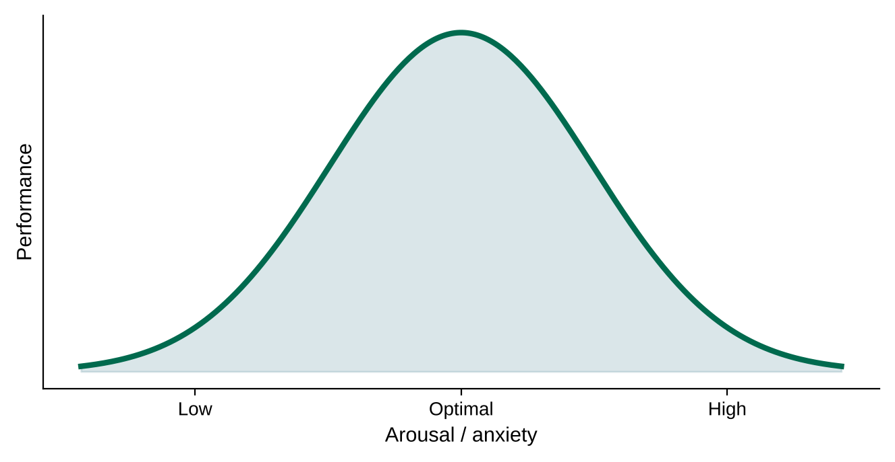
চিত্র ১১. ইয়ার্কস–ডডসন সম্পর্ক: সর্বোত্তম উদ্দীপ্ততায় সর্বোত্তম কর্মসম্পাদন
আবেগ প্রেষণা, সামাজিক সম্পর্ক ও সুস্থতাকে প্রভাবিত করে।
সামাজিক ও আবেগীয় শিখন (Social and emotional learning, SEL) আচরণ ও শিক্ষাগত অর্জন উভয়ই উন্নত করে (Durlak et al., 2011, ২১৩টি কর্মসূচির মেটা-বিশ্লেষণ)।
৫.৪ শিক্ষার্থীর আবেগ ব্যবস্থাপনায় শিক্ষকের ভূমিকা
একটি নিরাপদ, উষ্ণ ও পূর্বানুমেয় শ্রেণিকক্ষ গড়ে তুলুন।
নিজে আবেগ নিয়ন্ত্রণের দৃষ্টান্ত স্থাপন করুন এবং আবেগের নাম বলুন ("আমি বুঝতে পারছি তুমি হতাশ বোধ করছ")।
SEL দক্ষতাগুলো (CASEL) শেখান: আত্মসচেতনতা, আত্মব্যবস্থাপনা, সামাজিক সচেতনতা, সম্পর্কের দক্ষতা এবং দায়িত্বশীল সিদ্ধান্ত গ্রহণ।
গঠনকালীন মূল্যায়ন, সুস্পষ্ট প্রত্যাশা ও শিথিলায়ন কৌশলের মাধ্যমে পরীক্ষা-উদ্বেগ হ্রাস করুন।
মানসিক কষ্টের লক্ষণ (গুটিয়ে যাওয়া, আক্রমণাত্মকতা) শনাক্ত করুন এবং শিক্ষার্থীদের কাউন্সেলিংয়ের জন্য পাঠান।
অনুভূতি অন্বেষণে গল্প, ভূমিকাভিনয় ও শিল্পকলা ব্যবহার করুন।
অপমান ও শারীরিক শাস্তি পরিহার করুন। বাংলাদেশের হাইকোর্ট ২০১১ সালে শিক্ষাপ্রতিষ্ঠানে শারীরিক শাস্তিকে অবৈধ ঘোষণা করেন।
ইউনিট ৬: বুদ্ধি ও সৃজনশীলতা
অধ্যায়ের সারসংক্ষেপ
ওয়েক্সলার (Wechsler, 1944) বুদ্ধিকে সংজ্ঞায়িত করেছেন এভাবে: "উদ্দেশ্যমূলকভাবে কাজ করা, যৌক্তিকভাবে চিন্তা করা এবং নিজের পরিবেশের সঙ্গে কার্যকরভাবে মোকাবিলা করার জন্য ব্যক্তির সমষ্টিগত বা সামগ্রিক সামর্থ্য"। বিনে বিচারবুদ্ধি, অনুধাবন ও যুক্তির ওপর গুরুত্ব দিয়েছেন।
এই অধ্যায়ে যা আছে: বুদ্ধির ধারণা; বিতর্ক: সামগ্রিক বনাম বহুমাত্রিক দৃষ্টিভঙ্গি; বুদ্ধি অভীক্ষা; বহুমুখী বুদ্ধি ও শিখন; অভিসারী ও অপসারী চিন্তন; আবেগীয় বুদ্ধি; সৃজনশীলতা।
মূল পরিভাষা:
- সৃজনশীলতা: এমন কাজ সৃষ্টির সামর্থ্য যা একই সঙ্গে নতুন (মৌলিক) এবং উপযুক্ত (উপযোগী, অভিযোজনমূলক) (Sternberg & Lubart, 1999)।
শিক্ষাক্রমে যা বলা হয়েছেইউনিট ৬: বুদ্ধি ও সৃজনশীলতা · ৫ কন্টাক্ট আওয়ার
এই ইউনিট শেষে শিক্ষার্থীরা যা পারবে
- বুদ্ধির বিভিন্ন ধারণা ব্যাখ্যা করতে
- সৃজনশীলতার ধারণা বুঝতে
- বুদ্ধি ও সৃজনশীলতার মধ্যে সম্পর্ক স্থাপন করতে
- বুদ্ধি: ধারণা
- বিতর্ক: সামগ্রিক ও বহুমাত্রিক দৃষ্টিভঙ্গি
- বুদ্ধি অভীক্ষা: স্ট্যানফোর্ড-বিনে ও ওয়েক্সলার
- বহুমুখী বুদ্ধি ও শিখন
- অভিসারী ও অপসারী চিন্তন এবং সৃজনশীলতা ও শিখনে এগুলোর তাৎপর্য
- আবেগীয় বুদ্ধি
- সৃজনশীলতা: ধারণা, শিক্ষার্থীদের মধ্যে সৃজনশীলতা বিকাশের কৌশল
৬.১ বুদ্ধির ধারণা
ডেভিড ওয়েক্সলার (David Wechsler, 1944) বুদ্ধি (intelligence)-কে সংজ্ঞায়িত করেছেন এভাবে: "উদ্দেশ্যমূলকভাবে কাজ করা, যৌক্তিকভাবে চিন্তা করা এবং নিজের পরিবেশের সঙ্গে কার্যকরভাবে মোকাবিলা করার জন্য ব্যক্তির সমষ্টিগত বা সামগ্রিক সামর্থ্য"। আলফ্রেড বিনে (Alfred Binet) বিচারবুদ্ধি, অনুধাবন ও যুক্তির ওপর গুরুত্ব দিয়েছেন। রবার্ট স্টার্নবার্গ (Robert Sternberg) একে সংজ্ঞায়িত করেন পরিবেশের সঙ্গে খাপ খাওয়ানো, পরিবেশকে রূপ দেওয়া এবং পরিবেশ বেছে নেওয়ার সামর্থ্য হিসেবে।
৬.২ বিতর্ক: সামগ্রিক বনাম বহুমাত্রিক দৃষ্টিভঙ্গি
| দৃষ্টিভঙ্গি | তাত্ত্বিক | মূল ধারণা |
|---|---|---|
| একক / সাধারণ | স্পিয়ারম্যান (Spearman, 1904) | একটি সাধারণ উপাদান g এবং বিশেষ উপাদান s (দ্বি-উপাদান তত্ত্ব) |
| বহুসংখ্যক প্রাথমিক সামর্থ্য | থার্স্টোন (Thurstone, 1938) | সাতটি প্রাথমিক মানসিক সামর্থ্য: বাচনিক অনুধাবন, শব্দ-সাবলীলতা, সংখ্যা, স্থান, স্মৃতি, প্রত্যক্ষণের গতি, যুক্তি |
| বুদ্ধির কাঠামো | গিলফোর্ড (Guilford, 1967) | বিষয়বস্তু × প্রক্রিয়া × ফল থেকে সর্বোচ্চ ১৮০টি সামর্থ্য |
| তরল ও স্ফটিকায়িত | ক্যাটেল ও হর্ন (Cattell and Horn) | Gf (নতুন সমস্যায় যুক্তি প্রয়োগ) এবং Gc (সঞ্চিত জ্ঞান) |
| স্তরক্রমিক | ক্যারল (Carroll, 1993); CHC তত্ত্ব | শীর্ষে g, তারপর বিস্তৃত সামর্থ্য, তারপর সংকীর্ণ সামর্থ্য |
| ত্রিতান্ত্রিক / সফল বুদ্ধি | স্টার্নবার্গ (Sternberg, 1985) | বিশ্লেষণাত্মক, সৃজনশীল ও ব্যবহারিক বুদ্ধি |
| বহুমুখী বুদ্ধি | গার্ডনার (Gardner, 1983) | তুলনামূলকভাবে স্বাধীন বিভিন্ন বুদ্ধি |
অন্যান্য বিতর্কের মধ্যে রয়েছে বংশগতি বনাম পরিবেশ (যমজ ও দত্তক-গবেষণা ইঙ্গিত দেয় যে উভয়ই উল্লেখযোগ্যভাবে গুরুত্বপূর্ণ), ফ্লিন প্রভাব (Flynn effect; প্রজন্মান্তরে IQ স্কোর বৃদ্ধি, যা পরিবেশগত প্রভাবের ইঙ্গিত দেয়), এবং অভীক্ষায় সাংস্কৃতিক পক্ষপাত।
৬.৩ বুদ্ধি অভীক্ষা
স্ট্যানফোর্ড–বিনে (Stanford–Binet): বিশেষ সহায়তা প্রয়োজন এমন শিশুদের শনাক্ত করতে বিনে ও সিমোঁ (Binet and Simon, 1905) ফ্রান্সে প্রথম ব্যবহারিক বুদ্ধি অভীক্ষা তৈরি করেন। টারম্যান (Terman, 1916) স্ট্যানফোর্ডে এটিকে অভিযোজিত করেন এবং IQ = (Mental age ÷ Chronological age) × 100 (মানসিক বয়স ÷ প্রকৃত বয়স × ১০০) সূত্রটি প্রবর্তন করেন। আধুনিক সংস্করণগুলো (SB5) বিচ্যুতি IQ (গড় 100, SD 15) ব্যবহার করে এবং তরল যুক্তি, জ্ঞান, পরিমাণগত যুক্তি, দৃষ্টি-স্থানিক প্রক্রিয়াকরণ ও কার্যকরী স্মৃতি পরিমাপ করে।
ওয়েক্সলার স্কেলসমূহ: WPPSI (প্রাক-বিদ্যালয়), WISC (৬–১৬ বছর বয়সী শিশু) এবং WAIS (প্রাপ্তবয়স্ক)। এগুলো বিচ্যুতি IQ (deviation IQ) প্রবর্তন করে এবং একটি পূর্ণ-স্কেল IQ-এর পাশাপাশি সূচক স্কোর দেয় (বাচনিক অনুধাবন, দৃষ্টি-স্থানিক, তরল যুক্তি, কার্যকরী স্মৃতি ও প্রক্রিয়াকরণের গতি)।
| IQ পরিসর | শ্রেণিবিন্যাস (ওয়েক্সলার) |
|---|---|
| 130 ও তার বেশি | অতি উৎকৃষ্ট / অত্যন্ত উচ্চ |
| 120–129 | উৎকৃষ্ট |
| 110–119 | উচ্চ গড় |
| 90–109 | গড় |
| 80–89 | নিম্ন গড় |
| 70–79 | সীমান্তবর্তী |
| 70-এর নিচে | অত্যন্ত নিম্ন (অভিযোজনমূলক ঘাটতিসহ সম্ভাব্য বুদ্ধিবৃত্তিক প্রতিবন্ধিতা) |
৬.৪ বহুমুখী বুদ্ধি ও শিখন
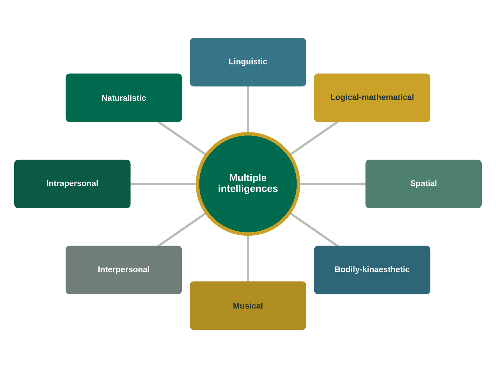
চিত্র ১২. গার্ডনারের বহুমুখী বুদ্ধি (১৯৮৩, ১৯৯৯)
তাৎপর্য: একটি বিষয়ে প্রবেশের বিভিন্ন পথ ব্যবহার করুন, বৈচিত্র্যময় সক্ষমতাকে মূল্য দিন এবং বৈচিত্র্যপূর্ণ মূল্যায়ন পরিকল্পনা করুন। হাওয়ার্ড গার্ডনার (Howard Gardner) নিজেই বহুমুখী বুদ্ধিকে (MI) "শিখনশৈলী" হিসেবে গণ্য করা বা শিশুদের তকমা দেওয়ার বিরুদ্ধে সতর্ক করেছেন।
৬.৫ অভিসারী ও অপসারী চিন্তন
জে. পি. গিলফোর্ড (J. P. Guilford) অভিসারী (convergent) উৎপাদন (একটি সঠিক উত্তর) এবং অপসারী (divergent) উৎপাদনের (বহু সম্ভাব্য উত্তর) মধ্যে পার্থক্য করেছেন। অপসারী চিন্তন পরিমাপ করা হয় সাবলীলতা, নমনীয়তা, মৌলিকত্ব ও বিস্তৃতকরণের মাধ্যমে, যেমন Torrance Tests of Creative Thinking (১৯৬৬)-এ। প্রায় ১২০ IQ পর্যন্ত বুদ্ধি ও সৃজনশীলতার মধ্যে মাঝারি সহসম্বন্ধ থাকে, এর পরে তারা ভিন্ন পথে যায় ("সীমারেখা অনুকল্প" বা threshold hypothesis)।
৬.৬ আবেগীয় বুদ্ধি
স্যালোভে ও মেয়ার (Salovey and Mayer, 1990) আবেগীয় বুদ্ধিকে (emotional intelligence, EI) সংজ্ঞায়িত করেছেন আবেগ প্রত্যক্ষণ, ব্যবহার, অনুধাবন ও ব্যবস্থাপনার সামর্থ্য হিসেবে। ড্যানিয়েল গোলম্যান (Daniel Goleman, 1995) পাঁচটি উপাদানসহ ধারণাটিকে জনপ্রিয় করেন: আত্মসচেতনতা, আত্মনিয়ন্ত্রণ, প্রেষণা, সহমর্মিতা ও সামাজিক দক্ষতা। আবেগীয় বুদ্ধি সুস্থতা, সম্পর্ক এবং কিছুটা হলেও অর্জন ও নেতৃত্বের পূর্বাভাস দেয়।
৬.৭ সৃজনশীলতা
সৃজনশীলতা (Creativity): এমন কাজ সৃষ্টির সামর্থ্য যা একই সঙ্গে নতুন (মৌলিক) এবং উপযুক্ত (উপযোগী, অভিযোজনমূলক) (Sternberg & Lubart, 1999)।
সৃজনশীল প্রক্রিয়ার চারটি স্তর (গ্রাহাম ওয়ালাস, Graham Wallas, ১৯২৬): প্রস্তুতি → অন্তর্লীনতা (incubation) → উদ্ভাস (illumination) → যাচাই।
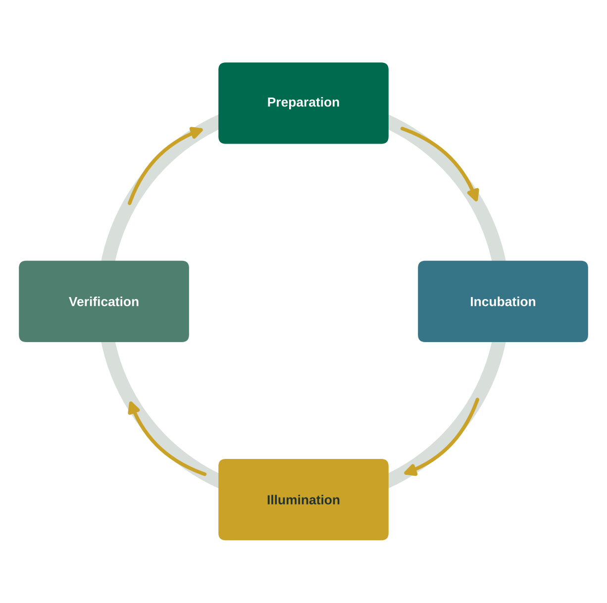
চিত্র ১৩. ওয়ালাসের সৃজনশীল প্রক্রিয়ার স্তরসমূহ
সৃজনশীলতা বিকাশের কৌশল: মুক্ত-প্রান্ত প্রশ্ন; বিচার স্থগিত রেখে মস্তিষ্কঝড় (brainstorming; Osborn); SCAMPER; প্রকল্প ও সমস্যাভিত্তিক শিখন; অস্বাভাবিক উত্তর গ্রহণ করা; অন্তর্লীনতার জন্য সময় দেওয়া; শিল্পকলার সমন্বয়; ব্যর্থতার ভয় কমানো; নিজে কৌতূহলের দৃষ্টান্ত স্থাপন করা; এবং কেবল নির্ভুলতা নয়, মৌলিকত্বেরও মূল্যায়ন করা।
ইউনিট ৭: শ্রেণিকক্ষ ব্যবস্থাপনা
অধ্যায়ের সারসংক্ষেপ
শ্রেণিকক্ষ ব্যবস্থাপনা প্রতিক্রিয়ামূলক (অসদাচরণের জবাব দেওয়া) হওয়ার চেয়ে বেশি অগ্রসক্রিয় (পরিকল্পনা, রুটিন ও সম্পৃক্ততার মাধ্যমে সমস্যা প্রতিরোধ)। কুনিন (Kounin, 1970) শিক্ষকের কয়েকটি মূল আচরণ চিহ্নিত করেছেন: সর্বদর্শিতা (যা কিছু ঘটছে সে সম্পর্কে সচেতনতা), যুগপৎ ব্যবস্থাপনা (একসঙ্গে একাধিক বিষয় সামলানো), পাঠের মসৃণতা ও গতিময়তা, এবং দলকে সতর্ক রাখা ও জবাবদিহি।
এই অধ্যায়ে যা আছে: ধারণা, প্রকৃতি ও গুরুত্ব; শৃঙ্খলা ও ব্যবস্থাপনার পরিকল্পনা; আচরণগত সমস্যার কারণ ও প্রকারভেদ; সাড়াদানের কৌশল; ইতিবাচক আচরণ সহায়তা (PBS): সমগ্র-বিদ্যালয় উপাগম।
মূল পরিভাষা:
- শ্রেণিকক্ষ ব্যবস্থাপনা: শিক্ষাগত এবং সামাজিক-আবেগীয় উভয় শিখনকে সহায়তা ও সহজতর করে এমন পরিবেশ সৃষ্টির জন্য শিক্ষকেরা যেসব পদক্ষেপ গ্রহণ করেন (Evertson & Weinstein, 2006)।
শিক্ষাক্রমে যা বলা হয়েছেইউনিট ৭: শ্রেণিকক্ষ ব্যবস্থাপনা · ৭ কন্টাক্ট আওয়ার
এই ইউনিট শেষে শিক্ষার্থীরা যা পারবে
- শ্রেণিকক্ষ ব্যবস্থাপনার কৌশল পরিকল্পনা করতে
- শ্রেণিকক্ষে আচরণগত সমস্যার কারণ ও প্রকারভেদ বিশ্লেষণ করতে
- বিভিন্ন আচরণগত সমস্যায় সাড়া দিতে
- শ্রেণিকক্ষে ইতিবাচক আচরণ সহায়তা উপাগম প্রয়োগ করতে
- শ্রেণিকক্ষ ব্যবস্থাপনা: ধারণা, প্রকৃতি, গুরুত্ব
- শ্রেণিকক্ষের শৃঙ্খলা ও ব্যবস্থাপনার পরিকল্পনা
- শ্রেণিকক্ষে আচরণগত সমস্যার কারণ ও প্রকারভেদ
- আচরণগত সমস্যায় সাড়াদানের কৌশল
- ইতিবাচক আচরণ সহায়তা (PBS): সমগ্র-বিদ্যালয় উপাগম
৭.১ ধারণা, প্রকৃতি ও গুরুত্ব
শ্রেণিকক্ষ ব্যবস্থাপনা (Classroom management): শিক্ষাগত এবং সামাজিক-আবেগীয় উভয় শিখনকে সহায়তা ও সহজতর করে এমন পরিবেশ সৃষ্টির জন্য শিক্ষকেরা যেসব পদক্ষেপ গ্রহণ করেন (Evertson & Weinstein, 2006)।
শ্রেণিকক্ষ ব্যবস্থাপনা প্রতিক্রিয়ামূলক (reactive; অসদাচরণের জবাব দেওয়া) হওয়ার চেয়ে বেশি অগ্রসক্রিয় (proactive; পরিকল্পনা, রুটিন ও সম্পৃক্ততার মাধ্যমে সমস্যা প্রতিরোধ)। জ্যাকব কুনিন (Jacob Kounin, 1970) শিক্ষকের কয়েকটি মূল আচরণ চিহ্নিত করেছেন: সর্বদর্শিতা (withitness; যা কিছু ঘটছে সে সম্পর্কে সচেতনতা), যুগপৎ ব্যবস্থাপনা (overlapping; একসঙ্গে একাধিক বিষয় সামলানো), পাঠের মসৃণতা ও গতিময়তা (smoothness and momentum), এবং দলকে সতর্ক রাখা (group alerting) ও জবাবদিহি। সুব্যবস্থাপিত শ্রেণিকক্ষ শিক্ষাগত শিখন-সময় (academic learning time) বাড়ায়।
৭.২ শৃঙ্খলা ও ব্যবস্থাপনার পরিকল্পনা
দৃষ্টিগোচরতা ও চলাচলের সুবিধার জন্য ভৌত স্থান বিন্যাস করুন।
ইতিবাচক ভাষায় লেখা অল্প কয়েকটি নিয়ম এবং অনেকগুলো সুস্পষ্ট রুটিন (প্রবেশ, উপকরণ বিতরণ, দলগত কাজ) প্রতিষ্ঠা করুন, যা বছরের শুরুতে শেখানো ও অনুশীলন করানো হয়।
আকর্ষণীয়, সুবিন্যস্ত গতির পাঠ পরিকল্পনা করুন, যেখানে এক কাজ থেকে আরেক কাজে উত্তরণ মসৃণ।
প্রত্যেক শিক্ষার্থীর সঙ্গে সম্পর্ক গড়ে তুলুন।
যৌক্তিক, সামঞ্জস্যপূর্ণ ও সম্মানজনক পরিণতির পরিকল্পনা করুন।
অভিভাবকদের সঙ্গে যোগাযোগ রাখুন।
৭.৩ আচরণগত সমস্যার কারণ ও প্রকারভেদ
| কারণসমূহ | প্রকারভেদ |
|---|---|
| শিক্ষার্থী: অপূর্ণ চাহিদা, শিখন-অসুবিধা, ADHD, আবেগীয় সমস্যা, একঘেয়েমি, মনোযোগ আকর্ষণের চেষ্টা (ড্রাইকার্সের (Dreikurs) চারটি ভ্রান্ত লক্ষ্য: মনোযোগ, ক্ষমতা, প্রতিশোধ, অক্ষমতা প্রদর্শন) | কাজের বাইরের আচরণ, অনুমতি ছাড়া কথা বলা, অমনোযোগ |
| শিক্ষক: দুর্বল পরিকল্পনা, অস্পষ্ট প্রত্যাশা, অসামঞ্জস্য, বিদ্রূপ, নিম্ন প্রত্যাশা | বিঘ্ন সৃষ্টি, অবাধ্যতা, আক্রমণাত্মকতা |
| শিক্ষাক্রম: বিষয়বস্তু অতি কঠিন বা অতি সহজ, অপ্রাসঙ্গিক | উৎপীড়ন (সাইবার উৎপীড়নসহ) |
| পরিবার ও সমাজ: দারিদ্র্য, পারিবারিক কলহ, সহিংসতা, গণমাধ্যম | গুটিয়ে থাকা, উদ্বেগ, বিদ্যালয় পালানো |
| শ্রেণিকক্ষের পরিবেশ: অতিরিক্ত ভিড়, গরম, কোলাহল | প্রতারণা, ভাঙচুর |
৭.৪ সাড়াদানের কৌশল
প্রথমে মৃদু হস্তক্ষেপ: কাছে যাওয়া, চোখে চোখ রাখা, একটু থামা, শিক্ষার্থীর নাম ধরে ডাকা, অবাচনিক সংকেত।
পুনর্নির্দেশনা ও পুনঃসম্পৃক্তকরণ: একটি বিকল্প বেছে নেওয়ার সুযোগ দিন অথবা শান্তভাবে প্রত্যাশাটি আবার বলুন।
আচরণের সঙ্গে সম্পর্কিত যৌক্তিক পরিণতি।
দৃঢ় শৃঙ্খলা (Assertive discipline) (ক্যান্টার, Canter): সুস্পষ্ট নিয়ম, ইতিবাচক স্বীকৃতি, সামঞ্জস্যপূর্ণ পরিণতি।
পুনরুদ্ধারমূলক চর্চা (Restorative practices): শাস্তির বদলে সংলাপের মাধ্যমে ক্ষতির প্রতিকার।
কার্যভিত্তিক আচরণ মূল্যায়ন (Functional behaviour assessment, FBA): আচরণটির কাজ (আচরণটি কী পায় বা কী এড়ায়) শনাক্ত করুন এবং একটি বিকল্প আচরণ শেখান।
দীর্ঘস্থায়ী সমস্যার ক্ষেত্রে অভিভাবক ও কাউন্সেলরদের সঙ্গে সহযোগিতা।
৭.৫ ইতিবাচক আচরণ সহায়তা (PBS): সমগ্র-বিদ্যালয় উপাগম
PBS (যুক্তরাষ্ট্রে PBIS) একটি প্রমাণভিত্তিক কাঠামো, যা ইতিবাচক বিদ্যালয়-পরিবেশ সৃষ্টিতে আচরণবিজ্ঞানকে প্রয়োগ করে (Sugai & Horner, 2002)। এটি একটি তিন-স্তরবিশিষ্ট প্রতিরোধ মডেল ব্যবহার করে:

চিত্র ১৪. তিন-স্তরবিশিষ্ট ইতিবাচক আচরণ সহায়তা মডেল
মূল বৈশিষ্ট্যসমূহ: সমগ্র বিদ্যালয়ের জন্য অল্প কয়েকটি ইতিবাচক প্রত্যাশা (যেমন "নিরাপদ থাকো, শ্রদ্ধাশীল হও, দায়িত্বশীল হও"); প্রত্যাশিত আচরণ সুস্পষ্টভাবে শেখানো; যথাযথ আচরণের স্বীকৃতি দেওয়া; পরিণতির একটি ধারাবাহিক ক্রম; উপাত্তভিত্তিক সিদ্ধান্ত গ্রহণ; এবং পরিবারের সম্পৃক্ততাসহ দলগত নেতৃত্ব।
অনুশীলন-শিক্ষাদানের (practice teaching) সময় পাঠ পরিকল্পনা বা পর্যবেক্ষণ করলে সুস্পষ্ট শ্রেণিকক্ষ ব্যবস্থাপনার দিকে লক্ষ করুন: শুরুতেই প্রত্যাশা জানিয়ে দেওয়া, নাম ধরে ডাকা, শ্রেণিকক্ষে ঘুরে বেড়ানো এবং নির্দিষ্ট আচরণের প্রশংসা করা ("দল ৩, পালা করে কাজ করার জন্য ধন্যবাদ")। আপনার উত্তরে এই উদাহরণগুলো ব্যবহার করুন।
পাঠতালিকা
শিক্ষাক্রমে সুপারিশকৃত
অফিশিয়াল কোর্স শিক্ষাক্রমে তালিকাভুক্ত বই, জার্নাল ও প্রতিবেদন, সেখানে যেভাবে দেওয়া আছে।
- Alexander, P. A., & Winne, P. H. (2006). Handbook of educational psychology (2nd Ed.). Erlbaum.
- Armstrong, T. (1994). Multiple Intelligences in the Classroom.Virginia: ASCD.
- Berk, L. E. (2003). Child Development (6th Ed.). New Jersey: Pearson Education Lefrancois.
- Frederickson, N., Miller, Andy, & Cline, Tony. (2008). Educational psychology. Hodder Education.
- Jensen, Eric (1998). The brain in mind, Virginia: ASCD.
- Mangal, S. K. (1993). Advanced educational psychology, New Delhi: Prentice-Hall Pvt. Ltd.
- Ormrod, J. E. (2006). Essentials of educational psychology. Pearson Merrill Prentice Hall.
- Robinson, K. (2016). Creative Schools: The grassroots revolution that's transforming education. Penguin Publishing Group.
- Sternberg, R. J., & Williams, Wendy M. (2010). Educational psychology (2nd Ed.). Merrill.
- Tuckman, B. W., & Monetti, David M. (2011). Educational psychology. Wadsworth/Cengage Learning.
- Woolfolk, A. (2016). Educational psychology (13th Ed.), Boston: Pearson.
- Woolfolk, A., Hughes, M., & Walkup, V. (2008). Psychology in education, Harlow: Pearson Longman.
- নীহার রঞ্জন সরকার, (২০০৬), মনোবিজ্ঞান ও জীবন, ঢাকা: জ্ঞানকোষ প্রকাশন।
- মুহাম্মাদ নাজমুল হক, সায়রা হোসেন ও মোঃ আহসান হাবীব, (২০১৮). শিক্ষায় মনোবিজ্ঞান, ঢাকা: বিশ্বসাহিত্য ভবন।
- মুহাম্মাদ নাজমুল হক ও সায়রা হোসেন,(২০১৪), শিক্ষায় জ্ঞান ও বিকাশ তত্ত্ব, ঢাকা: বিশ্বসাহিত্য ভবন।
এই বিষয়ে বিশ্বব্যাপী বহুল পঠিত বই
এই কোর্সের সঙ্গে মানানসই সুপরিচিত আন্তর্জাতিক বই।
- Woolfolk, A. (2019). Educational Psychology (14th ed.). Pearson.
- Santrock, J. W. (2018). Educational Psychology (6th ed.). McGraw-Hill.
- Slavin, R. E. (2018). Educational Psychology: Theory and Practice (12th ed.). Pearson.
- Vygotsky, L. S. (1978). Mind in Society: The Development of Higher Psychological Processes. Harvard University Press.
- Bruner, J. S. (1960). The Process of Education. Harvard University Press.
- Gardner, H. (1983). Frames of Mind: The Theory of Multiple Intelligences. Basic Books.
- Dweck, C. S. (2006). Mindset: The New Psychology of Success. Random House.
- Goleman, D. (1995). Emotional Intelligence. Bantam Books.
পরীক্ষা প্রস্তুতি প্রশ্নব্যাংক
ক. বহুনির্বাচনি প্রশ্ন (MCQ)
১. সাধারণভাবে শিক্ষা মনোবিজ্ঞানের জনক হিসেবে বিবেচনা করা হয়:
(a) ভুন্ট (Wundt) (b) থর্নডাইক (Thorndike) (c) স্কিনার (Skinner) (d) পিয়াজে (Piaget)
উত্তর দেখুন
উত্তর: (b)
২. "ফলাফলের সূত্র" (Law of effect) প্রস্তাব করেন:
(a) পাভলভ (Pavlov) (b) থর্নডাইক (Thorndike) (c) স্কিনার (Skinner) (d) ওয়াটসন (Watson)
উত্তর দেখুন
উত্তর: (b)
৩. কোনো আচরণ বৃদ্ধির জন্য একটি অপ্রীতিকর উদ্দীপক অপসারণ করাকে বলে:
(a) ইতিবাচক পুনর্বলন (b) নেতিবাচক পুনর্বলন (c) শাস্তি (d) বিলোপ
উত্তর দেখুন
উত্তর: (b)
৪. অন্তর্দৃষ্টিমূলক শিখন প্রদর্শন করেন:
(a) কোহলার (Köhler) (b) টলম্যান (Tolman) (c) বান্দুরা (Bandura) (d) হাল (Hull)
উত্তর দেখুন
উত্তর: (a)
৫. পিয়াজের তত্ত্বে সংরক্ষণ-ধারণা (conservation) বিকশিত হয়:
(a) সংবেদন-সঞ্চালন স্তরে (b) প্রাক-সক্রিয়তা স্তরে (c) মূর্ত সক্রিয়তা স্তরে (d) যৌক্তিক (বিমূর্ত) সক্রিয়তা স্তরে
উত্তর দেখুন
উত্তর: (c)
৬. নতুন তথ্যের সঙ্গে খাপ খাওয়াতে বিদ্যমান স্কিমার পরিবর্তন করাকে বলে:
(a) আত্তীকরণ (b) উপযোজন (c) ভারসাম্যায়ন (d) অভিযোজন
উত্তর দেখুন
উত্তর: (b)
৭. মিলারের (Miller) মতে স্বল্পমেয়াদি স্মৃতির ধারণক্ষমতা প্রায়:
(a) 3 ± 1 (b) 5 ± 2 (c) 7 ± 2 (d) 10 ± 3
উত্তর দেখুন
উত্তর: (c)
৮. ZPD যাঁর ধারণা:
(a) পিয়াজে (Piaget) (b) ব্রুনার (Bruner) (c) ভিগটস্কি (Vygotsky) (d) অসুবেল (Ausubel)
উত্তর দেখুন
উত্তর: (c)
৯. নির্মাণবাদ (Constructionism) যাঁর সঙ্গে সম্পর্কিত:
(a) প্যাপার্ট (Papert) (b) সিমেন্স (Siemens) (c) ফন গ্লাসারসফেল্ড (von Glasersfeld) (d) ডিউই (Dewey)
উত্তর দেখুন
উত্তর: (a)
১০. সংযোগবাদ প্রস্তাব করেন:
(a) সিমেন্স ও ডাউনস (Siemens and Downes) (b) ডেসি ও রায়ান (Deci and Ryan) (c) হেস ও কেনিয়ন (Hase and Kenyon) (d) মেয়ার ও স্যালোভে (Mayer and Salovey)
উত্তর দেখুন
উত্তর: (a)
১১. হার্জবার্গের তত্ত্বে বেতন হলো একটি ______।
(a) প্রেষণাদায়ক উপাদান (b) স্বাস্থ্যবিধানমূলক উপাদান (c) বিকাশমূলক চাহিদা (d) অন্তর্নিহিত উপাদান
উত্তর দেখুন
উত্তর: (b)
১২. আত্মনিয়ন্ত্রণ তত্ত্বের তিনটি মৌলিক চাহিদা হলো স্বাধিকার, সক্ষমতা এবং:
(a) আত্মমর্যাদা (b) সম্পর্কযুক্ততা (c) নিরাপত্তা (d) অর্জন
উত্তর দেখুন
উত্তর: (b)
১৩. মানসিক চাপের সঙ্গে প্রধানত সম্পর্কিত হরমোন হলো:
(a) ইনসুলিন (b) থাইরক্সিন (c) কর্টিসল (d) মেলাটোনিন
উত্তর দেখুন
উত্তর: (c)
১৪. IQ = MA/CA × 100 সূত্রটি জনপ্রিয় করেন:
(a) বিনে (Binet) (b) টারম্যান (Terman) (c) ওয়েক্সলার (Wechsler) (d) স্পিয়ারম্যান (Spearman)
উত্তর দেখুন
উত্তর: (b)
১৫. "g উপাদান" প্রস্তাব করেন:
(a) থার্স্টোন (Thurstone) (b) স্পিয়ারম্যান (Spearman) (c) গার্ডনার (Gardner) (d) স্টার্নবার্গ (Sternberg)
উত্তর দেখুন
উত্তর: (b)
১৬. ওয়ালাসের স্তরবিন্যাসে অন্তর্লীনতার পরের স্তর হলো:
(a) প্রস্তুতি (b) উদ্ভাস (c) যাচাই (d) বিস্তৃতকরণ
উত্তর দেখুন
উত্তর: (b)
১৭. "সর্বদর্শিতা" (Withitness) পরিভাষাটি যাঁর:
(a) ক্যান্টার (Canter) (b) কুনিন (Kounin) (c) গ্লাসার (Glasser) (d) ড্রাইকার্স (Dreikurs)
উত্তর দেখুন
উত্তর: (b)
১৮. PBS মডেলে স্তর ১ আনুমানিক কত শতাংশ শিক্ষার্থীর জন্য প্রযোজ্য:
(a) ৫% (b) ১৫% (c) ৫০% (d) ৮০% শিক্ষার্থী
উত্তর দেখুন
উত্তর: (d)
১৯. গোলম্যানের আবেগীয় বুদ্ধির মডেলে নিচের কোনটি অন্তর্ভুক্ত নয়:
(a) আত্মসচেতনতা (b) সহমর্মিতা (c) সামাজিক দক্ষতা (d) স্থানিক সামর্থ্য
উত্তর দেখুন
উত্তর: (d)
২০. ইয়ার্কস–ডডসন সূত্র কর্মসম্পাদনকে যার সঙ্গে সম্পর্কিত করে:
(a) বুদ্ধি (b) উদ্দীপ্ততা (c) পুনর্বলন (d) বয়স
উত্তর দেখুন
উত্তর: (b)
খ. সংক্ষিপ্ত প্রশ্ন
প্রশ্ন ১. পরিপক্বতা ও শিখনের মধ্যে পার্থক্য নির্দেশ করুন।
প্রশ্ন ২. থর্নডাইক প্রস্তাবিত শিখনের তিনটি সূত্র ব্যাখ্যা করুন।
প্রশ্ন ৩. ভারা প্রদান (scaffolding) কী? ZPD-এর সঙ্গে এর সম্পর্ক কী?
প্রশ্ন ৪. জ্ঞানীয় চাপ তত্ত্ব ব্যাখ্যা করুন এবং শিক্ষাদানে এর দুটি তাৎপর্য উল্লেখ করুন।
প্রশ্ন ৫. উদাহরণসহ অন্তর্নিহিত ও বাহ্যিক প্রেষণার মধ্যে পার্থক্য নির্দেশ করুন।
প্রশ্ন ৬. শিখনে থাইরয়েড গ্রন্থির ভূমিকা ব্যাখ্যা করুন।
প্রশ্ন ৭. অপসারী চিন্তনের চারটি উপাদান কী কী?
প্রশ্ন ৮. ইতিবাচক আচরণ সহায়তা কী?
গ. রচনামূলক প্রশ্ন
প্রশ্ন ৯. শিক্ষা মনোবিজ্ঞানের পরিধি ও পদ্ধতি আলোচনা করুন।
প্রশ্ন ১০. শিখনের আচরণবাদী, জ্ঞানবাদী ও গঠনবাদী তত্ত্বের তুলনা করুন এবং এগুলোর শিক্ষাগত তাৎপর্য আলোচনা করুন।
প্রশ্ন ১১. পিয়াজের জ্ঞানীয় বিকাশ তত্ত্ব এবং শ্রেণিকক্ষে এর প্রয়োগের সমালোচনামূলক মূল্যায়ন করুন।
প্রশ্ন ১২. মাসলোর চাহিদার সোপান ও আত্মনিয়ন্ত্রণ তত্ত্ব ব্যাখ্যা করুন। বাংলাদেশে শিক্ষার্থীদের প্রেষিত করতে একজন শিক্ষক কীভাবে এগুলো ব্যবহার করতে পারেন?
প্রশ্ন ১৩. "আবেগ হলো শিখনের প্রবেশদ্বার।" আবেগের তত্ত্বসমূহের আলোকে আলোচনা করুন।
প্রশ্ন ১৪. বুদ্ধি সম্পর্কে সামগ্রিক ও বহুমাত্রিক দৃষ্টিভঙ্গি আলোচনা করুন। বুদ্ধি ও সৃজনশীলতা কীভাবে সম্পর্কিত?
প্রশ্ন ১৫. শ্রেণিকক্ষে আচরণগত সমস্যার কারণ ব্যাখ্যা করুন এবং PBS-সহ সেগুলো মোকাবিলার কৌশল বর্ণনা করুন।
তথ্যসূত্র
Atkinson, R. C., & Shiffrin, R. M. (1968). Human memory: A proposed system and its control processes. In K. W. Spence & J. T. Spence (Eds.), The psychology of learning and motivation (Vol. 2, pp. 89–195). Academic Press.
Baddeley, A. D., & Hitch, G. (1974). Working memory. In G. H. Bower (Ed.), The psychology of learning and motivation (Vol. 8, pp. 47–89). Academic Press.
Bandura, A. (1997). Self-efficacy: The exercise of control. W. H. Freeman.
Deci, E. L., & Ryan, R. M. (1985). Intrinsic motivation and self-determination in human behavior. Plenum.
Donaldson, M. (1978). Children's minds. Fontana.
Dunlosky, J., Rawson, K. A., Marsh, E. J., Nathan, M. J., & Willingham, D. T. (2013). Improving students' learning with effective learning techniques. Psychological Science in the Public Interest, 14(1), 4–58.
Durlak, J. A., Weissberg, R. P., Dymnicki, A. B., Taylor, R. D., & Schellinger, K. B. (2011). The impact of enhancing students' social and emotional learning: A meta-analysis of school-based universal interventions. Child Development, 82(1), 405–432.
Dweck, C. S. (2006). Mindset: The new psychology of success. Random House.
Evertson, C. M., & Weinstein, C. S. (Eds.). (2006). Handbook of classroom management. Lawrence Erlbaum.
Gardner, H. (1983). Frames of mind: The theory of multiple intelligences. Basic Books.
Goleman, D. (1995). Emotional intelligence. Bantam.
Herzberg, F., Mausner, B., & Snyderman, B. B. (1959). The motivation to work. Wiley.
Howard-Jones, P. A. (2014). Neuroscience and education: Myths and messages. Nature Reviews Neuroscience, 15(12), 817–824.
Keller, J. M. (1987). Development and use of the ARCS model of instructional design. Journal of Instructional Development, 10(3), 2–10.
Köhler, W. (1925). The mentality of apes. Harcourt Brace.
Kounin, J. S. (1970). Discipline and group management in classrooms. Holt, Rinehart & Winston.
Maslow, A. H. (1943). A theory of human motivation. Psychological Review, 50(4), 370–396.
Pashler, H., McDaniel, M., Rohrer, D., & Bjork, R. (2008). Learning styles: Concepts and evidence. Psychological Science in the Public Interest, 9(3), 105–119.
Pekrun, R. (2006). The control-value theory of achievement emotions. Educational Psychology Review, 18(4), 315–341.
Piaget, J. (1952). The origins of intelligence in children. International Universities Press.
Ryan, R. M., & Deci, E. L. (2000). Self-determination theory and the facilitation of intrinsic motivation, social development, and well-being. American Psychologist, 55(1), 68–78.
Salovey, P., & Mayer, J. D. (1990). Emotional intelligence. Imagination, Cognition and Personality, 9(3), 185–211.
Santrock, J. W. (2018). Educational psychology (6th ed.). McGraw-Hill.
Schunk, D. H. (2020). Learning theories: An educational perspective (8th ed.). Pearson.
Siemens, G. (2005). Connectivism: A learning theory for the digital age. International Journal of Instructional Technology and Distance Learning, 2(1), 3–10.
Skinner, B. F. (1953). Science and human behavior. Macmillan.
Slavin, R. E. (2018). Educational psychology: Theory and practice (12th ed.). Pearson.
Sternberg, R. J. (1985). Beyond IQ: A triarchic theory of human intelligence. Cambridge University Press.
Sugai, G., & Horner, R. H. (2002). The evolution of discipline practices: School-wide positive behavior supports. Child & Family Behavior Therapy, 24(1–2), 23–50.
Sweller, J. (1988). Cognitive load during problem solving: Effects on learning. Cognitive Science, 12(2), 257–285.
Thorndike, E. L. (1913). Educational psychology: The psychology of learning (Vol. 2). Teachers College.
UNESCO. (2023). Guidance for generative AI in education and research. UNESCO.
Vygotsky, L. S. (1978). Mind in society: The development of higher psychological processes. Harvard University Press.
Wood, D., Bruner, J. S., & Ross, G. (1976). The role of tutoring in problem solving. Journal of Child Psychology and Psychiatry, 17(2), 89–100.
Woolfolk, A. (2019). Educational psychology (14th ed.). Pearson.